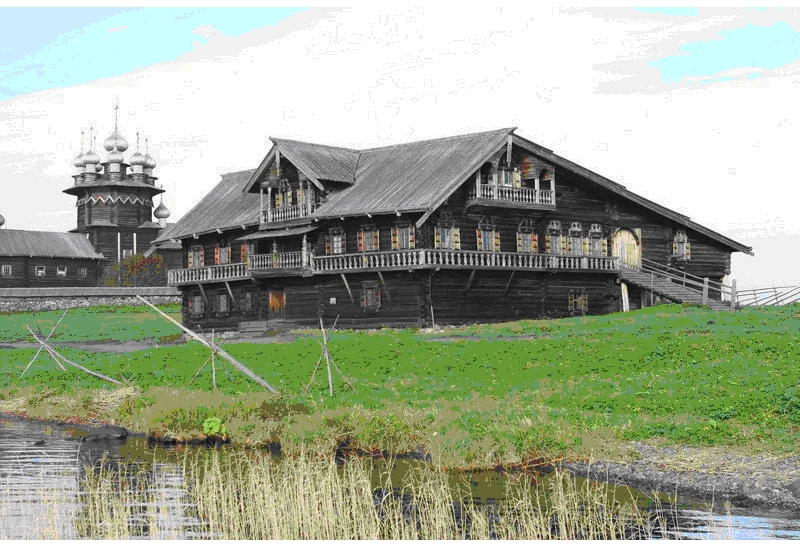

19.1. Семья
Том 5 · osnovy-sociologii-tom-5.pdf · стр. 136 (кандидат) · Кандидат страницы PDF; требуется сверка · источник: PDF/DOC данной редакции.
Содержит авторские утверждения; их фактическая достоверность оценивается отдельно.
19.1. Семья
СЕМЬЯ, образно говоря, это — «зёрнышко», из которого вырастает всё будущее общество (общество будущего), т.е. прямо или опосредованно в ходе развития культуры все прочие общественные институты вырастают из института семьи1; и под воздействием процессов, протекающих в институте семьи, все прочие успевшие сложиться общественные институты модифицируются. И соответственно:
Задаче обеспечения функционирования института семьи — в системе общественных отношений должны быть подчинены все прочие общественные институты и функционирование организационно-технологического комплекса.
В обществах на всех стадиях их развития именно институт семьи решает две основные задачи:
воспроизводство новых поколений;
интеграция в общество каждого новорождённого в процессе его взросления.
И в решении этих задач семью многих поколений, живущих совместно, не способен полноценно заменить никакой другой общественный институт, поскольку только в ней ребёнок видит все предстоящие ему возрасты жизни сразу и перенимает в повседневности у взрослых множество жизненных навыков, большей частью неосознанно (во многом на основе импринтинга), что во многих случаях вносит решающий вклад в формирование его личности и характера2.
Ещё в относительно недавнем историческом прошлом (в эпоху ранее конца XIX — начала ХХ веков) задача воспитания детей (в смысле выработки у них определённых нравственно-этических качеств, на основе которых строятся навыки поведения в обществе и навыки взаимодействия с другими людьми) почти что в полном объёме решалась институтом семьи.
Образование (в смысле освоения знаний и профессиональных навыков, позволяющих заниматься той или иной трудовой деятельностью в общественном объединении специализированного профессионального труда и участвовать в жизни цивилизованного общества)3 для подавляющего большинства населения также было делом внутрисемейным.
Образование было внутрисемейным по сути даже в тех случаях, когда профессиональная деятельность членов семьи протекала вне их собственного семейного хозяйства. Если члены одной семьи работали на каком-либо предприятии по найму, то семейные отношения оказывали своё влияние и на технологический процесс и на профессиональное обучение по месту работы новых поколений. И это было характерно не только для мелкой, но и для крупной промышленности, когда на заводах работали целыми семьями из поколения в поколение. Если ребёнка отдавали в чужую семью для обучения какому-либо ремеслу (как Ваньку Жукова4 в семью сапожника), то семейный характер образования был тем же, как и при обучении ремеслу в своей родной семье.
Эти две функции семьи (воспитание и образование) породили государственность, поскольку именно в семейном воспитании и образовании один отец учил своего сына быть пахарем или охотником, а другой — руководителем, а по мере расширения подвластной территории, наращивания полномочий и сферы ответственности — государем.
В большинстве стран, в том числе и в так называемых «развитых», в тот период системы всеобщего обязательного образования не было. Та система внесемейного образования, осуществляемого профессиональными учителями, которая успела сложиться к тому времени, была платной и доступной только «элите»; а так же — и претендентам в «элиту», достаточно состоятельным, чтобы оплатить образование из своих доходов и накоплений, но при условии, что в обществе не было сословно-кастовых ограничений на доступ к образованию, аналогичных российскому «указу о кухаркиных детях» (1887 г.) времён правления Александра III, который и стал одной из главных скрытых причин краха империи, пребывавшей под властью неадекватного «вызовам времени» управленческого корпуса5.
С того времени в жизни многое изменилось. И главное изменение в том, что вся информация и алгоритмика, которая накоплена в культуре, уже не может быть загружена в индивидуальную психику во всей её полноте и детальности. Поэтому успех дальнейшего развития обусловлен построением системы воспитания и системы образования, которые бы адекватно отвечали «вызовам времени».
Суть жизненно состоятельного ответа на эти «вызовы времени» состоит в том, что необходимо воспитание поколений, которым были бы не свойственны лживость и коварство, поскольку лживость и коварство людей приводят в условиях, когда одни индивид не способен вместить в свою психику всю культуру, к тому, что культура становится не средством объединения людей, а средством их разобщения, поскольку на информацию, полученную от других людей, никто не может полагаться как на достоверную — вне зависимости от того солгал другой умышленно либо по неведению ретранслировал чужую ложь далее. Вследствие такой массовой утраты доверия людей к другим людям и к культуре культурная общность людей рассыпается.
Наряду с этим приходится признать, что к середине 1960‑х гг. семья во многом утратила функцию воспитания детей в указанном ранее смысле выработки у детей определённых нравственно-этических качеств, на основе которых строятся навыки поведения в обществе и навыки взаимодействия с другими людьми. Произошло это во многом потому, что семья многих поколений, живущих одним хозяйством, перестала быть статистически преобладающим типом семьи под воздействием, главным образом, трудовой миграции, сопровождавшей развитие науки и промышленности со второй половины XIX века. В СССР (и это унаследовано Россией) это было усугублено массовым строительством «хрущёвок», вытеснившим из жизни нормальный семейный дом.
Ниже на рис. 19.1‑1 представлена фотография дома серии 1‑335А-2, наиболее массовой серии в застройке городов, а иногда и сёл в СССР (за исключением Москвы, Ленинграда и столиц союзных республик, где большинство домов были построены по другим проектам) со второй половины 1960‑х гг., и план 4-комнатной квартиры в таком доме. Ширина стеновых панелей вдоль дома: 2,6 м — подъезды и узкие комнаты, 3,2 м — гостиные и широкие комнаты, высота потолков — 2,54 м; ширина здания — 11,6 м.
Соседней с 4-комнатной квартирой была как бы 3-комнатная квартира. Её план можно построить самостоятельно, если на место комнаты площадью 8,4 кв. м на плане 4‑комнатной квартиры сместить кухню (6,0 кв. м) и санблок. Фактически такая «трёхкомнатная» квартира представляла собой однокомнатную, в которой общая комната разделена лёгкими перегородками, «межкомнатные» проходы в которых закрывались картонными (на деревянном каркасе) дверями, не прилегавшими по всему периметру к дверному проёму (порога не было), со стеклянными вставками. Вследствие этого все три комнаты были фактически одной, поскольку звукоизоляция ни одной из них от других не была обеспечена. Т.е. это было государственно организованное издевательство над семьями, которым достались такие «трёхкомнатные» квартиры; для правящей «элиты» в то же самое время дома строились по другим проектам, где всё было более или менее приспособлено для комфортной жизни по стандартам тех времён. Также обратим внимание на то, что в целях улучшения отчётных статистических показателей строительной отрасли, увеличения объёма сбора квартирной платы и «улучшения» в отчётности характеристик жилья, площадь кухни и большой комнаты (гостиной) как бы увеличена приблизительно на 1 кв. м (каждого помещения) за счёт переноса входных дверей кухни и гостиной в прихожую.
<span class="smallcaps">Рис. 19.1‑1. Дом серии 1-335А-2 и план 4-комнатной квартиры в нём.</span>
<span class="smallcaps">Они размещались в торцах здания со стороны, противоположной подъездам. На плане квартира противоложного торца.</span>

Сопоставление квартир в доме серии 1‑335А-2 и крестьянских домов на Севере прошлых эпох (см., например, дом Ошевнева6 на рис. 19.1-2) это — показатель того, что технико-технологический прогресс общества может сопровождаться массовым обнищанием населения, хотя бедность и нищета, как и богатство имеют свой лик в каждую эпоху. Этот и подобные ему дома массовой застройки деревень и сёл на европейском Севере России, где не было крепостного права, в каталогах недвижимости наших дней именовались бы как «элитные коттеджи из отборных брёвен», хотя на момент постройки они были в общем-то типичным жильём для больших семей типичных тружеников в регионах, где сложился этот архитектурный тип жилища. Даже дом крестьянина-бедняка Пятницына, сохраняемый в архитектурном заповеднике Кижи, имеет жилую площадь порядка 50 кв. м — бо́льшую, чем четырёхкомнатная «хрущёвка», представленная на рис. 19.1-1, бывшая пределом мечтаний многих в 1960‑е — 1980‑е гг.
<span class="smallcaps">Рис. 19.1‑2. Дом Ошевнева.</span>
<span class="smallcaps">Архитектурный заповедник Кижи.</span>
Фактически «хрущёвка» стала инструментом разрушения института семьи в СССР7.
Кроме того, к середине 1960‑х гг. почти в каждую семью вошёл телевизор и не просто вошёл, а во многих семьях стал практически безальтернативно «главой семьи», от которого психологически мало кто из наших современников независим.
И если задаться вопросом, чем отличается телевещание советской эпохи от телевещания современного российского и общезападного образца, то ответ будет простой:
Телевещание советской эпохи было преимущественно образовательно-просветительским (с поправкой на тоталитаризм и ограниченность идеологии марксизма) и было ориентировано на то, чтобы люди расширяли свой кругозор и каждый, кто пожелает, смог бы стать активным деятелем общественного развития.
Телевещание постсоветской России, как и телевидение, взращённое в традициях либерального Запада, — преимущественно развлекательное и во многом растлевающее нравственность подрастающих поколений, но даже те образовательно-просветительские программы, которые есть, содержательно неадекватны Жизни тем в большей мере, чем ближе тематика к вопросам общегосударственной и общемировой политической значимости. Телевещание постсоветской эпохи ориентировано на то, чтобы манипулировать бездумной толпой в преддверии очередных выборов, а в остальное время — держать её вне сферы реально осуществляемой политики, подсадив на «наркотик» тех или иных шоу — каждому на его вкус.
Необходимо понимать последствия воздействия на детей такого телевещания. И одна из важнейших обязанностей семьи — защитить психику ребёнка от нравственного растления и дебилизации8 телевещанием.
Мультипликация, которую подавляющее большинство воспринимают как генератор развлечений, предназначенных большей частью для детей дошкольного возраста, обладает колоссальным потенциалом в формировании нравственности и этики будущих поколений, их миропонимания. И вопрос в том, кто и в каких целях использует этот потенциал.
Начнём с родителей. В подавляющем большинстве случаев для взрослых поставить ребёнку мультик — это способ выделить время для того, чтобы заняться какими-то своими делами так, чтобы ребёнок не мешал. А для ребёнка?
— Для ребёнка наиболее предпочтительный режим просмотра мультика это — сидеть у папы или мамы на коленях, или чтобы мама и папа сидели вместе на диване, а ребёнок мог уютно устроиться между ними. А потом ребёнку надо поговорить об увиденном в мультике: это его естественная психологически-возрастная потребность.
Если этой потребности нет, то значит — родители уже успели «затюкать» ребёнка или как-то иначе сумели вырыть пропасть или создать стену между собой и им. И если это так, то в перспективе, когда ребёнок подрастёт, то с высокой вероятностной предопределённостью в семье будут проблемы в виде конфликта поколений и его следствий: инстинктивные программы, стимулирующие конфликт поколений с целью расселения биологического вида, могут нейтрализовываться только упреждающим праведным воспитанием, формирующим осмысленную добросовестную волю и развивающим навык Любви.
Почему и для чего следует смотреть и обсуждать мультики с детьми?
— Чтобы ответить на этот вопрос правильно, надо понимать, что психика человека — это информационно-алгоритмическая система, а детство — период её становления и развития, в течение которого она не вполне функциональна. Если рассматривать психику личности как информационно-алгоритмическую систему, то в ней можно выявить несколько составляющих:
Врождённую — инстинкты, безусловные рефлексы, «пароли» доступа к информации, запечатлённой в духе рода, семьи — в их коллективном биополе (в родовых эгрегорах)9.
Импринтинговую составляющую — последствия первого впечатления, которые в большинстве своём действуют на протяжении все последующей жизни и которые модифицировать после того, как они сформировались, либо невозможно, либо весьма затруднительно (не говоря уж о том, что и выявить импринтинговую составляющую в массивах информации психики личности — не просто).
Социокультурно обусловленную составляющую — информация и навыки поведения (большей частью бессознательные автоматизмы), воспринятые из исторически сложившейся культуры общества или из субкультуры социальной группы без собственного их осмысления и переосмысления (часть из них тоже формируется на импринтинговой основе).
Лично осмысленный жизненный опыт, включая и переосмысление ранее названных составляющих, и собственные наработки.
В психике взрослых все четыре составляющих присутствуют в том или ином виде и в некоторой структурной упорядоченности, соответствующей типу строя психики, при котором они реализуются в жизни.
А в психике детей в момент рождения, есть только первая и зачатки второй составляющей. Потом, по мере взросления и развития структур организма формируются вторая и третья составляющая, но полноценно формировать четвёртую составляющую сам ребёнок может только в возрасте 13 лет и старше10, когда в основном завершится формирование структур головного мозга и нервной системы в целом, когда уже накоплен некоторый личный жизненный опыт, который может осмысляться и переосмысляться; и то при условии, что к этому возрасту совместно с родителями и другими взрослыми ребёнок выработал в себе основы познавательно-творческой личностной диалектической культуры. Ранее 13 — 15 лет недоразвитость структур головного мозга, нервной системы в целом и недоразвитость личностной культуры психической деятельности, включая и интеллектуальную деятельность, не позволяет ребёнку самостоятельно сформировать жизненно состоятельную четвертую составляющую психики.
Помочь в этом ему должны прежде всего родители, и только во вторую очередь в этом ему помочь могут другие взрослые. Причём действительная помощь — это не выдача готовой информации и рецептов решения тех или иных проблем, а совместные с ребёнком рассуждения на те или иные темы жизни. В этом случае биополе взрослого, функционирует в режиме думания (производства новых смыслов), а не в режиме выдачи готовой информации из памяти, и потому ребёнок, пребывая в духовном (биополевом) единстве со взрослым, подстраивает своё биополе под биополе взрослого, на основе чего вырабатывает способность думать тем более эффективно, чем более эффективно (в смысле решения проблем) умеют думать сами взрослые11.
И это всё имеет самое непосредственное отношение к мультипликации. В сюжете мультфильма можно показать без посторонних примесей многие проблемы и способы их решения, которые в жизни либо редки, либо опасны, которые не вполне могут быть показаны в художественных, документальных, научно-популярных и публицистических фильмах. Причём зрительская аудитория мультипликации — это дети, начиная с возраста 2,5 — 3 лет. И соответственно, если родители не отлынивают от своих родительских обязанностей — от помощи детям войти во взрослую жизнь подготовленными к ней, — то надо не только смотреть с детьми мультики, но и иметь целесообразный по отношению к этой задаче план показа мультиков и быть готовыми к их обсуждению.
В частности, с 2,5 лет «Первобытную сказку»12 полезно смотреть с детьми раз в год и раскрывать им в её сюжете проблемы мира взрослых, почему одни могут их решать и решают, а другие их решать не способны. Дело в том, что «Первобытная сказка» — одна из лучших и наиболее тематически полных мульт-иллюстраций к разделам 4.7 и 4.8 настоящего курса (см. том 1). Беда однако в том, что мало кто из родителей (и взрослых вообще) в состоянии прокомментировать «Первобытную сказку» в аспектах:
нравственно-психических типов мира взрослых, представленных в виде сказочных зверей,
характера взаимодействия каждого из персонажей с ноосферой сказочного мира, показанного в этом мультике.
Но сказанное выше о необходимости совместного просмотра и обсуждения касается и всех других мультиков.
А кроме того, есть мультики, которые по сути ориентированы на вразумление взрослых. Так в интернете можно прочитать различные истории о влиянии того или иного мультфильма на детей. Довольно часто родители сообщают, что после просмотра мультфильмов из сериала «Маша и Медведь» ребёнок долго не может уснуть: прыгает по кровати, поёт песни и хохочет; а в остальное время он начинает создавать больше проблем родителям — не по злому умыслу, а подражая Маше.
Причина в том, что сопереживая сюжету мультфильма, ребёнок отождествляет себя с Машей. Но «Маша и Медведь» это — мультсериал для взрослых, а не для детей, тем более не для детей дошкольного возраста. Основные качества Маши — беззаботность, безответственность, неуёмное любопытство, не подкреплённое осторожностью. Если ребёнок в возрасте, когда он ещё не умеет думать, смотрит этот мультик, то отождествляя себя с Машей, он в реальной жизни начинает воспроизводить её стиль поведения.
А вот взрослым этот мультфильм полезен, поскольку мультяшный Медведь решает задачу воспитания очень трудного ребёнка, и кое в чём у него есть чему поучиться реальным родителям, чтобы не наломать дров в воспитании своих реальных детей и внуков.
Ещё одна опасность — «суперидеальные герои». Суперидеальные персонажи опасны потому, что реальная жизнь иная и им в нет места в реальности. Поэтому подражание суперидеальным героям (как мультфильмов, так и художественных фильмов) в реальной жизни ведёт к катастрофе, поскольку их навыки победы над злом действенны только в искусственном мире сюжета, когда суперидеальный герой обладает ещё некоторыми навыками и везением, которых в реальной жизни может и не быть в силу причин, обусловленных объективными закономерностями бытия, которые систематически игнорируются и нарушаются в сюжетах, типом строя психики и эгрегориальным статусом тех, кто подражает суперидеальным героям. Подражание суперидеальным героям — это вхождение в алгоритмику самоликвидации благонамеренных субъектов. Именно по этой причине в «Первобытной сказке» Мартышка права, многократно характеризуя действия Фантика словами «это неподражаемо!»: надо быть, т.е. надо состояться, а не подражать, будучи несостоятельным имитатором.
В дошкольном возрасте мультики это — часть информационных потоков, под воздействием которых формируется прежде всего импринтинговая и социокультурно обусловленная составляющие личностной психики. Это очень важные процессы, вследствие того, что под их воздействием формируются способность либо неспособность самостоятельно строить четвёртую составляющую психики. И под властью этих процессов оказываются целые поколения.
Другая беда состоит в том, что среди мультипликаторов (как на постсоветском пространстве, так и за его пределами) крайне мало тех, с чьими произведениями ребёнка можно оставить наедине, подобно тому, как мы можем оставить детей наедине с выверенными веками народными колыбельными песнями, сказками и народным эпосом, которые в прошлом были доступны детям в изложении любимых и любящих их бабушек и дедушек, а также — родителей, а потом — в собственных детских играх по сюжетам сказок.
Кроме того, знание социологии и закулисной политологии наших дней и прошлого обязывает предполагать, что изрядная доля мультфильмов, производимых на Западе, — произведены под кураторством искусствоведов и психологов от ЦРУ и других спецслужб в целях дебилизации будущих поколений в подчиняемых США государствах в процессе осуществления глобализации по-библейски и создания «Pax Americana».
Как показывает анализ взаимоотношений «элитарной» государственности и сообщества художников, писателей, киносценаристов и кинорежиссёров и т.п. профессионалов, под чьим воздействием во многом формируется менталитет общества, все эти профессионалы и претенденты в профессионалы проходят своего рода кастинг, часто негласный, не формализованный (в том числе и в разного рода дружеских «тусовках»), по результатам которого:
одни получают возможности творить как бы свободно, т.е. без ограничений, на основе той нравственности и миропонимания, что у них есть, поскольку их нравственность и миропонимание лежат в пределах нравственно-этических норм, соответствующих проводимой политике;
а другим такого рода возможности закрываются навсегда, на более или менее продолжительное время или до смены политики государства в какой-либо области.
Эта система управления воздействием через художественное творчество во всех его разновидностях на миропонимание общества и социальных групп в его составе — не видна, если рассматривать жизнь общества на коротких интервалах времени, но её весьма трудно не заметить, рассматривая на исторически продолжительных интервалах времени жизнь общества и развитие культуры; и особенно, если не пропускать мимо внимания некоторые особенности биографий самих творцов художественных произведений, круг их общения и знать о теории «шести рукопожатий», согласно которой двух случайных людей в современном обществе разделяет / соединяет цепочка знакомств не более 6 человек: см. рис. 9.4‑1 — том 2 настоящего курса (представленная на нём схема дистанционного управления лидером работает и в отношении деятелей сферы искусства).
В условиях работы такого рода системы негласного «кастинга», селекции и раскрутки «великих» творцов художественных произведений случаи, подобные тому, что император Николай I — личный цензор А.С. Пушкина, а И.В. Сталин — объясняет С.М. Эйзенштейну, что и как должно быть показано в фильме «Иван Грозный», — это исключения. К таким методам государственная власть может прибегать только эпизодически в случае, если система «кастинга» не налажена или дала сбои и при этом решаются какие-то особо важные общественно-политические задачи.
Сказанное выше об управлении художественным творчеством — не конспирологический бред, а неизбежный вывод из прочтения книг: «Великая шахматная доска. Господство Америки и его геостратегические императивы» З. Бжезниского13 и книги «ЦРУ против СССР» Н.Н. Яковлева.
Дебилизация подрастающих поколений в государствах, которые должны стать и быть необратимо подконтрольны США в глобализации по-библейски и завершающем её «Pax Americana», целесообразна по отношению к решению этой задачи, поскольку позволяет снять множество проблем, которые неизбежно возникнут, если новые поколения будут входить в жизнь не покалеченными нравственно, чувственно и интеллектуально14. А мультфильмы, ориентированные прежде всего на детей дошкольного возраста, — средство способное решить эту задачу при условии непротивления обещств, государств, и семей прежде всего политике дебилизации и растления подрастающих поколений.
Хотя признательных публикаций США на эту тему нет15, но аналитический просмотр американских мультсериалов подтверждает, что США этим средством пользуются на протяжении уже нескольких десятилетий, решая свои глобальнополитические задачи на интервалах времени, охватывающих сроки смены нескольких поколений.
На этом фоне получивший огласку случай, когда в Японии в 1997 г. у нескольких сотен детей случились приступы эпилепсии в результате просмотра «Покемонов» — просто эпизод в системе массового злоупотребления мультипликацией как средством воздействия на процесс формирования психики подрастающих поколений.
Но есть ещё одна проблема.
То обстоятельство, что у современного человека левое полушарие головного мозга развито больше, чем правое, можно интерпретировать и как факт подавления развития правого полушария в далёком прошлом и закрепления этого результата на уровне генетики с целью порабощения человечества.
Дело в том, что если образное мышление подавлено, то человек становится аналогичен цифровой вычислительной машине в том смысле, что:
его мышление более или менее упорядочено в соответствии с грамматикой и лексиконом тех языков, которыми он владеет;
установление однозначных связей языковых конструкций с явлениями общего всем Мира ложится на внешнего оператора-программиста;
его поведение (взаимодействие с внешним — по отношению к его психике — миром) становится следствием грамматики (логики) и лексикона языка и связей языковых конструкций с явлениями общего всем нам Мира.
Разница между компьютером и индивидом только в том, что оператор, управляющий компьютером, всегда персонифицирован, а внешними манипуляторами по отношению к психике левополушарно мыслящего индивида могут выступать как другие субъекты, так и эгрегоры, культура общества и субкультуры в её составе, представляющие собой информационно-алгоритмические системы с которыми взаимодействует психика индивида.
Как следствие существует афоризм: «Те, кто читает книги, всегда будут управлять теми, кто смотрит телевизор». Но этот афоризм предполагает и продолжение: «Те, кто пишет книги, всегда будут управлять теми, кто читает книги, но не умеет соотнести прочитанное с жизнью».
[В оригинальном издании здесь расположена иллюстрация. Не воспроизводится до правовой проверки и решения владельца; см. запись в FIGURES.md.] <!-- figs:osnovy-sociologii-tom-5--image14 -->
Перед телевизором справа — психические инвалиды, лишённые воли и интеллекта, но такими их сделали воспитатели: родители, школа, телевидение… Потенциальный человек взбирается на гору из книг.
Поэтому втянуть детей в чтение книг с целью развития их образного мышления и выработки навыков соотнесения прочитанного с жизнью — тоже обязанность родителей, дедушек и бабушек, старших сестёр и братьев. В процессе чтения вырабатывается навык соображения — сопоставления языковым конструкциям образов и формирования отсутствующих в психике образов. Этому процессу может способствовать и совместное с детьми рисование, лепка и т.п. И соучаствовать в этом — первейшая обязанность родителей: бытовые дела — необходимы, но должны быть подчинены задаче вспомоществования детям состояться человеками. Поэтому взрослые должны соучаствовать в детских занятиях, а дети — в бытовых делах взрослых членов семьи.
Дети (и в несколько меньшей мере подростки) живут в том возрастном периоде, когда они большей частью без переосмысления перенимают всё и подражают всему, что видят в мире взрослых, вследствие того, что они многого ещё не знают (адекватное мировоззрение ещё не сформировалось), а личностная культура эффективного мышления ещё не выработалась; кроме того у многих ещё не выработалась и воля — способность подчинять самого себя и течение событий вокруг собственному осознанию целесообразности. И в эти периоды родительская опёка — важнейший фактор защиты детей от растления и уничтожения их будущего специфически-порочными субкультурами толпо-«элитарного» общества.
В данном случае родительскую опёку следует понимать в смысле разъяснения причинно-следственных связей и последствий тех или иных реальных или возможных действий, и главное — в смысле совместных диалоговых размышлений о проблемах ребёнка, семьи, страны и Мира, в котором он готовится жить, поощрения благодетельной инициативы ребёнка и помощи ему в осуществлении такого рода инициативы.
Иначе говоря, родительская опёка — это совместное с каждым ребёнком прохождение родителями и более старшими родственниками каждого этапа взросления ребёнка, однако на основе жизненного опыта родителей и более старших взрослых, при совместном с ребёнком переосмыслении этого жизненного опыта в сопоставлении с обстоятельствами и перспективами текущей жизни ребёнка, семьи, общества, человечества. То есть:
Каждый очередной ребёнок в семье — это вновь открывшаяся возможность для взрослых «вырасти заново», не совершая тех ошибок, которые они совершили, и разрешить свои ранее не выявленные проблемы личностного становления через восприятие проблем в «зеркале» детского мировосприятия и поведения.
Ещё один аспект родительской опёки — обязанность родителей и старших родственников: не подавать примеров дурного поведения дома и вне дома своим детям, друзьям своих детей и прочим детям16.
Приведём найденные в интернете свидетельства детского психолога, в основе которых лежат его наблюдения за детьми, растущими в проблемных (в том числе и в неполных семьях):
«За время работы с детьми, в своей практике, мне пришлось столкнуться со следующими фактами:
Дети любят своих родителей одинаково сильно, вне зависимости от демонстрируемого ими поведения.
Ребенок воспринимает маму и папу как целое и как важнейшую часть самого себя.
Отношение ребенка к отцу и отца к ребенку всегда формирует мать. (Женщина выступает посредником между отцом и ребёнком, именно она транслирует ребёнку: кто его отец, какой он и как к нему следует относиться).
Мать имеет абсолютную власть над ребёнком, она делает с ним всё что захочет, сознательно или бессознательно. Такая сила дана женщине природой для того, чтобы потомство смогло выжить без лишних сомнений. Сначала сама мама является миром ребенка, а позднее она выводит ребенка в мир через себя. Ребенок познает мир через маму, видит мир ее глазами, акцентирует внимание на том, что значимо для мамы. Осознанно и неосознанно мама активно формирует восприятие ребенка. С отцом ребенка тоже знакомит мама, она транслирует степень значимости отца. Если мама не доверяет мужу, то ребенок будет избегать отца. (…)
Отношение отца к ребенку тоже формирует мать. Например, если женщина не уважает отца ребенка, то мужчина может отказать ребенку во внимании. Достаточно часто повторяется одна и та же ситуация: стоит только женщине изменить внутреннее отношение к отцу ребенка, как он неожиданно изъявляет желание видеть ребенка и участвовать в его воспитании. И это даже в тех случаях, когда отец до этого долгие годы игнорировал ребенка.
Если нарушено внимание, память, неадекватна самооценка, а поведение оставляет желать лучшего — то в душе ребенка катастрофически не хватает отца.
Отвержение отца в семье часто ведет к появлению интеллектуальной и психической задержке развития ребенка.
Если нарушена коммуникативная сфера, высокая тревожность, страхи, а приспосабливаться к жизни ребенок так и не научился, и везде чувствует себя чужим — значит он никак не может отыскать маму в своем сердце.
Детям легче справляться с проблемами взросления, если они чувствуют, что мама и папа принимают их целиком, такими, какие они есть.
Ребенок растет здоровым эмоционально и физически, когда он находится вне зоны проблем своих родителей — каждого индивидуально и/или их как пары. То есть он занимает свое детское место в системе семьи.
Ребёнок всегда “держит флаг” за отвергнутого родителя. Поэтому он будет соединяться с ним в своей душе любыми способами. Например, он может повторять тяжёлые особенности судьбы, характера, поведения и т.п. Причём, чем сильнее мать не принимает эти особенности, тем ярче у ребёнка они проявляются. Но как только мама искренне разрешит ребёнку быть похожим на своего отца, любить его открыто, у ребёнка появится выбор: соединяться с отцом через тяжелое или же любить его напрямую – сердцем.
Ребенок предан маме и папе одинаково сильно, он связан любовью. Но когда отношения в паре становятся тяжелыми, ребенок силой своей преданности и любви глубоко включается в то тяжелое, что причиняет боль родителям. Он берет на себя столько, что действительно во многом облегчает душевные страдания одного или обоих родителей сразу. Например, ребенок может стать психологически равным родителям: другом, партнером. И даже психотерапевтом. А может подняться еще выше, заменяя психологически им их родителей. Такая ноша является непосильной ни для физического, ни для психического здоровья ребенка. Ведь, в итоге, он остается без своей опоры — без родителей. (…)
Мужское гораздо больше, чем похожесть на собственного отца. Принцип мужского — это закон. Духовность. Честь и достоинство. Чувство меры (внутреннее ощущение уместности и своевременности). Социальная самореализация (работа по душе, хороший материальный доход, карьера) возможна, только если в душе человека есть позитивный образ отца.
Какой бы замечательной ни была мать, но только отец может инициировать взрослую часть внутри ребёнка. (Даже если отцу самому не удалось выстроить отношения с собственным отцом. Для процесса инициации это не столь важно). Вы, наверное, встречали взрослых людей, которые инфантильны и беспомощны как дети? Начинают одновременно кучу дел, имеют множество проектов, но ни один так и не доводят до конца. Или те, кто боятся начать дело, проявить активность в социальной самореализации. Или те, кто не могут сказать “нет”. Или не держат данного слова, на них сложно в чём либо положиться. Или те, кто постоянно лгут. Или те, кто боятся иметь собственную точку зрения, соглашаются со многим против собственной воли, “прогибаясь” под обстоятельства. Или наоборот, те, кто ведут себя вызывающе, воюют с окружающим миром, противопоставляя себя другим людям, многое делая в пику, или даже ведут себя противоправно. Или те, кому жизнь в социуме даётся с огромным трудом, “втридорога” и т.п. — всё это те люди, у которых не было доступа к своему отцу.
Только рядом с отцом маленький ребёнок впервые познаёт границы. Собственные границы и границы других людей. Грани дозволенного и не дозволенного. Свои возможности и способности. Радом с отцом ребёнок чувствует, как действует закон. Его силу. (С мамой отношения строятся по другому принципу: без границ — полное слияние). Как пример, можно вспомнить поведение европейцев (в Европе ярко выражены принципы мужского) и русских (в России ярко выражены принципы женского), когда они вместе оказываются на одной территории. Европейцы, на какой бы маленькой территории не оказались в пространстве, интуитивно размещаются таким образом, что никому никто не мешает, никто не нарушает ничьих границ, и даже если это переполненное людьми пространство, то всё равно каждому остаётся место для своих интересов. Если же появляются русские, то они заполняют собой всё. Уже никому нет места рядом. Своим поведением разрушая чужое пространство, потому что не имеют своих собственных границ. Начинается хаос. А это именно то, чем и является женское без мужского.
Именно в мужском потоке формируются достоинство, честь, воля, целеустремлённость, ответственность — во все временна высоко ценимые человеческие качества.
Другими словами, дети, которых мама не допустила к отцовскому потоку (сознательно или бессознательно) не смогут легко и естественно пробудить в себе уравновешенного, взрослого, ответственного, логичного, целеустремлённого человека — теперь придётся прилагать огромные усилия. Потому что психологически они остались мальчиками и девочками, так и не став мужчинами и женщинами.
Теперь за мамино решение: оградить ребёнка от отца, человек всю жизнь будет платить невероятно высокую цену. Словно он потерял благословение на жизнь»17.
Если фактор родительской опёки устраняется тем, что в условиях капиталократии родители заняты добыванием денег, поскольку на одну зарплату семье не прожить вследствие проводимой «элитарной» государственностью и олигархией финансово-экономической политики, а на общение с детьми у родителей в результате этого нет ни времени, ни сил; представители более старших поколений рода живут обособленно от семьи, в которой растут их внуки и правнуки; или же взрослые сами ведут порочный образ жизни, — то детей «воспитывает» и «образовывает» прежде всего телевизор, а в детских садах, в школе и на улице — такие же дети, воспитанные в их большинстве растлевающим и калечащим интеллект и психику в целом телевещанием.
Потом к этому набору «воспитателей» добавляется интернет, входя в который, подросток с неадекватно сформированной в более ранние возрастные периоды нравственностью способен нанести неустранимый вред своей психике и личностному развитию. Вследствие этого он становится опасным не только для себя, но и для окружающих (главным образом — для сверстников и младших по возрасту друзей) и потомков.
Всё это, и прежде всего информационная политика телевещания, противоречит тем определённым по целям и содержанию принципам, которые должны лежать в основе воспитания и образования подрастающих поколений, о которых писал П.Ф. Лесгафт (1837 — 1909) ещё в XIX веке, рассматривая в качестве одной из важнейших субкультур общества семейную и школьную педагогику, основой которой он считал развитие организма как носителя психики личности.18
И фактически при нарушении общественно необходимых принципов функционирования института семьи имеет место взращивание социальной базы фашизма — толпы «маленьких» безвольных «людей», не способных проявить инициативу и принять на себя гражданскую ответственность за судьбы Родины и человечества и тем самым осуществлять демократию — народовластие в его полноте.
Это означает, что политика государства, если мы действительно желаем обеспечить безопасность общественного развития, должна быть направлена на то, чтобы качество жизни подавляющего большинства семей изменилось так, чтобы они могли нести функцию воспитания детей. Государственность, система всеобщего образования, СМИ, искусства в этом семейном деле могут либо помогать, либо препятствовать и вредить. Соответственно:
Принципы свободы слова и свободы художественного творчества должны в политической практике государства истолковываться так, чтобы они способствовали семье в деле воспитания детей, а не растлевали нравственность подрастающих поколений.
То обстоятельство, что некоторая часть взрослого населения, включая и представителей СМИ и сферы искусств, — сами невольники пороков (т.е. греховодники), вследствие чего становятся их пропагандистами либо не понимают вредоносности такого рода пропаганды, — не является основанием для того, чтобы, ублажая их разнородную похоть, государство позволяло им массово растлевать подрастающие поколения.
В современных обществах можно выделить несколько типов домашних хозяйств и, соответственно, — несколько типов семей: на одном полюсе будет «семья» типа «индивид-кочевник с чемоданом», а на другом — «большая семья» (далее это — термин, понимаемый в значении: семья нескольких взрослых поколений, живущая общим хозяйством, в которой воспитываются дети).
Историческая реальность современной капиталократической цивилизации такова, что большинство населения низведено де-факто до «правового статуса» одного из многих экономических ресурсов, на которые не распространяются нормы «человеческой» этики «истинной элиты», вследствие чего «людскими ресурсами», как собственностью, как вещами, распоряжаются транснациональные олигархические группировки, контролирующие мировую экономику. Больша́я семья как доминирующий тип семьи — помеха поддержанию такого — внеэтичного (по отношению к корпоративной этике олигархии) статуса в отношении большинства населения. Соответственно именно «семья» типа «индивид с чемоданом» рассматривается многими политическими аналитиками и философами как тип «семьи», который будет статистически доминирующим в будущем, поскольку именно в нём якобы может быть наиболее полно реализован потенциал самовыражения личности.19
Если говорить о причине распространённости этой иллюзии, самоубийственной для народов, то она проста: её приверженцы забывают о том, что человек не рождается взрослым, т.е. не рождается на пике освоенности потенциала своих способностей. Выход на этот пик личностного развития обусловлен, во-первых, генетическим потенциалом, а во-вторых, процессами воспитания и образования. И в аспекте формирования генетического потенциала, и в аспекте воспитания ключевая роль семьи безальтернативна. При этом ведущую роль в личностном развитии после всех медико-биологических особенностей организма, складывающихся в пренатальный период, начиная от предыстории зачатия, и при рождении, играет принцип, выраженный в русской поговорке «не научился Ванечкой — Иван-Иванычем не научишься…».
Если рассматривать формирование личности как процесс, то по отношению к нему во многом справедлива ещё одна поговорка: посеешь поступок — пожнёшь привычку, посеешь привычку — пожнёшь характер, посеешь характер — пожнёшь судьбу…
И обязанность семьи в том, чтобы не сеялось то, что помешает ребёнку состояться человеком. Поскольку импринтинговые процессы особенно в раннем детстве играют важную роль в формировании психики личности, то взрослым строгость надо применять прежде всего в отношении себя, не подавая малышу даже единичных дурных примеров поведения, — ребёнок такого рода строгость по отношению к себе воспримет через импринтинг; а строгость по отношению к ребёнку как поток придирок и нравоучений в детстве вызывает только страхи и неприязнь в силу того, что интеллектуальная мощь ребёнка не всегда достаточна и нет знания жизни, чтобы понять правоту взрослых и осознанно согласиться с нею и начать вести себя иначе осознанно волевым порядком.
Ребёнок ещё с эмбрионального периода своей жизни интенсивно осваивает Мир, в котором ему предстоит жить, вбирает в себя информацию, и в этом деле он не может обойтись без помощи других людей. При этом он в состоянии поглотить столько внимания взрослых, сколько ни один взрослый не в состоянии предоставить ему в одиночку (во-первых, во взрослой жизни есть и другие дела, а во-вторых, ребёнок после выхода из младенчества по «энерговооружённости» превосходит взрослых, вследствие чего утомит любого взрослого раньше, чем устанет сам).
Дети нуждаются во внимании родителей.
«В ноябре 2015 года одна молодая мама из США провела удивительный эксперимент в домашних условиях. Вернее, сам эксперимент банальный до чертиков, а вот результаты, к которым он привел, заставляют задуматься каждого из нас.
Немного предыстории. Брэнди — мама двух прекрасных 4-летних близнецов: Блэйна и Райла. Однажды ей захотелось интереса ради провести следующее исследование. Она сидела тихонечко в углу комнаты, пока ее малыши играли друг с другом. Единственной ее задачей было подсчитать, сколько раз детишки обернулись в ее сторону по тем или иным причинам. Результатами своего домашнего эксперимента она поделилась в Фейсбук. Вот что она написала:
«Сегодня я провела дома небольшой эксперимент, пока мои мальчики игрались. Я сидела тихонечко в углу комнаты и считала, сколько раз они мимолетом глянут на меня по той или иной причине. Им было интересно увидеть мои реакции. Их волновало, вижу ли я их козни, одобряю ли их действия или же, напротив, гневаюсь.
И тогда я подумала: а что, если бы в это время я сидела, уставившись в телефон, и знать не знала, что происходит вокруг?
Тогда бы 28 раз (именно столько раз мальчики оборачивались посмотреть на маму — прим. ред.) мои ангелы подумали бы, что Интернет важнее, чем они. 28 раз я бы обделила вниманием своих детей. 28 раз мои сыновья почувствовали бы себя одинокими. 28 раз мои малыши подумали бы: то, что происходит онлайн, намного важнее, чем реальная жизнь.
В мире, где все воспринимают тебя таким, каким ты кажешься, а не каким есть на самом деле; в мире, где твой уровень успеха меряется количеством подписчиков в соцсетях; в мире, где живое общение заменилось перепиской из соседних комнат, я прошу вас: будьте другими!
Пожалуйста, отложите свои мобильные телефоны и проводите время с родными и близкими. Следующее поколение надеется, что мы научим их, как быть взрослыми. А мы просто убиваем время на Интернет...
Эти мощные слова Брэнди напоминают нам о том, что действительно важно в жизни. И пусть она пришла к этому выводу довольно странным путем, суть от этого не меняется».20
Именно это обстоятельство и делает большую — нравственно-этически здравую — семью нескольких взрослых совместно проживающих поколений наилучшей средой для личностного развития ребёнка, прежде всего на самых ранних его этапах, начиная от предыстории зачатия. А все педагоги-профессионалы системы дошкольного и школьного воспитания и образования — могут быть только помощниками семье в деле формирования личностей представителей новых поколений и не более того; их задача — компенсировать воздействие фактора «не научился Ванечкой…» в тех случаях, когда семья в силу разных причин что-то упускает из виду либо не может дать ребёнку по каким-то иным причинам. И даже в условиях, когда внесемейное всеобщее образование стало нормой, педагоги — учителя-предметники — только помогают семье сделать то, что она не может сделать сама вследствие роста объёмов информации и алгоритмики в культуре.
Кроме того большая семья (если она нравственно здравая) автоматически разрешает и ряд других социальных проблем, в частности: снижение уровня подростковой (и соответственно, спустя некоторое время и взрослой) преступности; одинокая старость и обеспечение жизни утративших здоровье и работоспособность; она создаёт и меньшую экологическую нагрузку на среду обитания за счёт существенно меньшей потребности во многих видах продукции в расчёте на душу населения.
Поэтому:
одно из проявлений рабовладения — уничтожение института семьи в среде рабов;
извращение функций института семьи — неотъемлемый аспект процесса порабощения самобытных обществ, которое далеко не всегда осуществляется грубой военной силой, но может быть осуществлено в некоторых обстоятельствах и методом «культурного сотрудничества» на основе принципа «каждый в меру понимания работает на себя, а в меру непонимания — на тех, кто понимает больше…»21.
Хотя это банальность, тем не менее не лишне напомнить ещё раз, что в основе института семьи лежит различие биологических функций мужского и женского пола в жизни биологического вида «Человек разумный».22
Соответственно в семье и в жизни общества представители обоих полов должны выполнять естественные для каждого из них биологические и социальные функции, взаимно дополняя друг друга. Поэтому:
Концепция «гендерного равенства» и тем более самоопределения индивидом своей «гендерной принадлежности» — не просто вздорна, а представляет собой один из инструментов порабощения или уничтожения общества, как и порождённая ею субкультура «unisex», навязываемая обществам во всём мире.
Дав одному из своих фильмов название «Благословите женщину»23, С.С. Говорухин указал на важнейшее обстоятельство жизни общества, но тему он, к сожалению, не раскрыл. Поэтому обратимся к существу вопроса.
Безусловно, что женщины и мужчины разные не только по строению тела и физиологии, но и по особенностям психики (см. раздел 17, а также специальную литературу, посвящённую этой теме). Однако творческий потенциал одинаково свойственен и мужчинам, и женщинам, поскольку каждый из полов должен нести свою долю в наместничестве Божием на Земле. Но реализуется творческий потенциал мужчин и женщин по-разному.
Статистически чаще творческий потенциал мужчин реализуется большей частью непосредственно в решении тех проблем, с которыми его сводит жизнь.
Статистически чаще творческий потенциал женщин в разрешении проблем внесемейного характера — в силу того, что она мать и в этом качестве незаменима, — реализуется большей частью опосредованно через её детей и внуков, а отчасти и через мужа (либо сожителей и любовников, если она распутна).
<!-- -->
- Меньшей частью творческий потенциал мужчин реализуется опосредованно через их детей и жену (либо сожительниц и любовниц, если мужчины распутны), а творческий потенциал женщин (если они ведут семейную жизнь) меньшей частью реализуется непосредственно в решении проблем внесемейного характера, с которыми их сводит жизнь.
Поэтому, если кто-то из мужчин по мнению общества совершил нечто выдающееся, это общество прежде всего прочего должно быть благодарно его матери (и возможно, — бабушкам), поскольку в период от предыстории зачатия до вступления ребёнка в речевой период и начала им собственного активного познания Жизни и творчества именно мама — безальтернативно — главный взрослый человек в судьбе и в жизни каждого: она избирает будущего отца своих детей и признаёт избрание мужчиной её самой в качестве супруги и матери их детей24; мама — первый учитель и первый воспитатель, куратор первых этапов личностного развития будущего взрослого человека.
Именно в этот период (начиная с предыстории зачатия), над которым почти безраздельно царит женщина (вне зависимости от того, осознаёт она это либо же нет — см. раздел 17), формируется духовное наследие25 будущего ребёнка, закладываются телесные и биополевые структуры его организма и формируются те основы психики, на которых в дальнейшем развивается, осваивается и реализуется в жизни познавательно-творческий потенциал. Если нет этих основ, то на альтернативной им пустоте не может сложиться ничего полезного для общества и самой личности вне зависимости от её пола26. Роль мужчины как непосредственного воспитателя и наставника ребёнка в жизни семьи становится весомой только на последующих этапах личностного развития.
Соответственно, если рассматривать общество на интервалах времени, охватывающих жизнь нескольких поколений, то:
за женщиной — большей частью решение социально-стратегических задач в русле концепции, под властью которой живёт общество27, хотя сама женщина может и не осознавать этого, либо не соответствовать своему биологическому и социальному предназначению28;
а за мужчиной — большей частью решение тактических задач в русле концептуально обусловленной стратегии, хотя и он может не осознавать этого и не соответствовать своему биологическому и социальному предназначению.
И решение задач обоих классов протекает в русле эгрегориальной алгоритмики соответствующей национальной или конфессионально обусловленной культуры. Поэтому:
Противопоставлять друг другу мужское и женское начало, возвеличивать одно из них, унижая другое — противоестественная дурость.
Такого рода дурость может иметь следствиями только остановку культурного развития, деградацию культуры и биологическое вырождение.
Соответственно таким социальным функциям полов, в основе которых лежит биология (строение организмов и специфика инстинктивных программ их взаимоотношений в процессе воспроизводства биологического вида), — источником качества жизни общества на исторически продолжительных интервалах времени, охватывающих жизнь нескольких поколений, являются личностные качества девушек, становящихся впоследствии женщинами-матерями, обусловленные характером воспитания в этом обществе девочек.
* * *
В связи со сказанным в последнем абзаце, и поскольку в произведениях живописи смысл в ряде случаев упакован плотнее, нежели это возможно в тексте, предложим прочувствовать и осознать, представленное на репродукции малоизвестной картины слева. О том, что есть у Франции такой художник Жан Огюст Доминк Энгр (1780 — 1867), не все знают, но его «Источник» социально-философски гораздо выше «Джоконды», о которой мало кто не знает и которой многие поклоняются.
Если же это произведение живописи не будит в зрителе ничего, кроме похоти либо ханжеского неприятия вида зачавшей человека женщины в её естественной красоте и таинстве творчества будущего, то у зрителя очень серьёзные проблемы нравственно-этического характера, проблемы с миропониманием и с психикой в целом. А исторически сложившаяся психиатрия и классическая философия Запада в этой беде ему помочь не могут: надо прочувствовать жизнь, подумать самому и, изменив себя, начать иначе относиться к Жизни…
[В оригинальном издании здесь расположена иллюстрация. Не воспроизводится до правовой проверки и решения владельца; см. запись в FIGURES.md.] <!-- figs:osnovy-sociologii-tom-5--image15 -->
Ж.О. Энгр. Источник. 1856 г. Музей Орсе. Париж.
* *
*
Однако подавляющее большинство людей к процессам, продолжительность которых охватывает жизнь нескольких поколений, относятся безучастно, поскольку их результаты — как плохие, так и хорошие — «в этой жизни» им не достанутся, а о бессмертии души и связанных с этим обстоятельствах они не задумываются. Тем не менее, человечество едино в череде поколений, и потому отношение к «долгоиграющим» процессам и внесение в них благого или дурного вклада — один из своего рода тестов на состоятельность в качестве человека — наместника Божиего на Земле: только человек — носитель человечного типа строя психики — благостно сопричастен вечности, если соотносить типы строев психики с диапазонами продолжительности процессов, в которых он может быть дееспособен.
И изменения качества жизни общества в ту или иную сторону также начинаются с изменения характера воспитания в нём, прежде всего, девочек.29
В основе этой причинно-следственной связи лежит то обстоятельство, что если рассматривать жизнь общества, как совокупность взаимодействующих друг с другом общественных институтов, то социально значимая деятельность мужчин большей частью протекает вне семьи, а социально-стратегически значимая деятельность женщины в её полноте и совершенстве безальтернативно может протекать только в семье. Причём, если исходить из интересов личностного становления ребёнка, то это должна быть семья нескольких взрослых поколений, живущих под одной крышей, общим хозяйством, в ладу всех её членов.
Это не значит, что женщина должна быть затворницей в доме своего отца, а потом — мужа, жить на их доходы, и иметь дело сначала только с куклами, никчёмными, но модными безделушками, а потом — только с кастрюлями, сковородками, горшками и пелёнками, пылесосом, прочей домашней утварью либо командовать прислугой и т.п., ублажать мужа и общаться только с подругами и родственниками, а всё иное общение — только с дозволения отца либо мужа или только под их контролем30.
Если общественный уклад сводит роль женщины к этому, то она оказывается неспособной выполнить как до́лжно свою социально-стратегическую миссию — реализовать свой творческий потенциал через своих детей и внуков, — поскольку такая самореализация требует широкого кругозора, развитой личностной культуры чувств, личностной культуры интеллектуальной и психической в целом деятельности, а также — предвидения, что невозможно без свободного формирования интересов, свободного участия женщины в жизни общества и без собственных впечатлений от тех сфер деятельности, в которых свой творческий потенциал непосредственно реализуют большей частью мужчины и в которых предстоит работать её сыновьям и внукам.
Сказанное выше позволяет понять ещё один афоризм В.О. Ключевского, и оценить его не как незаслуженный оскорбительный упрёк, а как действительно ключевое указание к разрешению проблем развития Русской многонациональной цивилизации:
«Несчастье русских в том, что у них прекрасные дочери, но дурные жёны и матери; русские женщины мастерицы влюбляться и нравиться, но не умеют ни любить, ни воспитывать. (Вариант: …, но не охотницы ни любить, ни воспитывать»)31.
Многие не согласятся с этой оценкой причин бедственного на протяжении многих веков характера истории региональной цивилизации многонациональной Руси В.О. Ключевским, в том числе и потому, что не понимают сути Любви, а В.О. Ключевский говорит именно о ней, но не о страстях и взаимных привязанностях.
Изрядная доля женщин не согласится с этой оценкой потому, что им аксиоматически свойственно стоять на позиции, выраженной К.И. Шульженко в романсе «Три вальса»32: «Как это, как это я не права? Я и не думаю злиться! (выделено нами жирным при цитировании) Ах, как кружится голова, как голова кружи́тся…».
Многие (как мужчины, так и женщины) не согласятся с В.О. Ключевским потому, что для них «любовь» и забота их матерей о них — неоспоримы, а непререкаемое уважение к своим матерям, к их жизни и деятельности, свойственно им с детства, в силу чего они не вдаются в анализ их жизни и в их оценку, а также — не вдаются в анализ результатов воспитания их самих своими родителями.
Тем не менее, переосмысление жизни родителей и выявление в результате переосмысления чего-либо, что является выражением неправедности, не является основанием для обвинительных заключений и приговоров в их адрес:
во-первых, Всевышний не ошибся, избрав именно их в качестве Ваших родителей (если бы кто-то другой мог бы стать лучшими, чем они родителями для Вас, то так и было);
во-вторых, если и выявлены какие-либо проявления неправедности с их стороны, которые отрицательно сказались на результатах зачатия, рождения и воспитания ими Вас, то лучшее, что можно сделать и что следует сделать Вам, — простить своим родителям (и всем старшим родственникам по восходящим линиям) их ошибки и не воспроизводить их (тем более в «усовершенствованном» виде) в своей жизни и в воспитании Ваших детей и внуков, которых Бог доверил (или доверит) Вам.
А некоторым Бог дал матерей, которые не вписываются в приведённый афоризм В.О. Ключевского, вследствие чего им свойственно думать, что большинство матерей в России — такие же как и их матери.
Тем не менее, такого рода чувственно-эмоциональное несогласие с этой оценкой В.О. Ключевского — опасно для будущего, поскольку всех запечатлённых на фотографиях ниже выпускниц школ России зачали и родили мамы; и мамы сыграли в их воспитании такую роль, что показанные ниже результаты воспитания оказались неизбежными. Приводимая далее подборка — это не постановочные кадры. Снимки сделаны в Москве в дни последнего звонка и выпускных вечеров школ большей частью в 2012 г. От времён 1920‑х — первой половины 1980‑х гг. не осталось аналогичных по содержанию фотографий не потому, что тогда фотоаппарат был редкостью33, а сейчас в кармане почти что у каждого школьника лежат мобильные телефоны с фото- и видео- камерами и широко доступны компьютеры и интернет34, а потому, что нравы в те времена были другими, и была иная этика (нормы поведения) — как наедине с собой, так и на людях. Конечно, и ныне не все выпускницы и выпускники такие, как запечатлены на фотографиях, но «лицо праздника» определили именно такие.
* * *
Выпускницы начала XXI века.
[В оригинальном издании здесь расположены иллюстрации (7 объекта). Иллюстрации опущены: см. реестр графического слоя работы.] <!-- figs:osnovy-sociologii-tom-5--image16,osnovy-sociologii-tom-5--image17,osnovy-sociologii-tom-5--image18,osnovy-sociologii-tom-5--image19,osnovy-sociologii-tom-5--image20,osnovy-sociologii-tom-5--image21,osnovy-sociologii-tom-5--image22 -->
По сути общенародный праздник — вступления в жизнь нового повзрослевшего поколения — они внутренне нравственно готовы обратить в пьяный разгул, постепенно перетекающий в свальный грех. Сдерживающим фактором пока ещё являются внешние ограничения в виде полиции и родительского гнева, хотя многие рубежи нравственной деградации они уже успешно преодолели. Если же внешние ограничения снять, то — они покажут себя как ошалевшие под воздействием курева, алкоголя, беззаботности и безответственности полные сил дикие «бандерлоги»35. Инстинктивная алгоритмика стадно-стайного поведения доделает то, до чего сами они не додумаются.
* *
*
В 1920‑е гг. за появление на улице «в слегка пьяном виде» можно было вылететь из комсомола и из партии. Если бы в любом из городов СССР в 1950‑е — 1970‑е гг. отпраздновали выпускной так, как запечатлено на снимках выше, то всё руководство города и, прежде всего, руководство городского отдела народного образования, а также директора и завучи36 наиболее «отличившихся» в разгуле школ — лишились бы своих должностей.
Неоднократно публиковался факт, что в разгар Великой Отечественной войны немецкий врач, обследовавший угнанных из СССР в Германию на принудительные работы девушек в возрасте 16 — 20 лет, был крайне удивлён и решил обратиться к Гитлеру с призывом немедленно начать мирные переговоры с нашей страной. Его удивило, что более 90 % им осмотренных были девственницами, и он писал Гитлеру, что невозможно победить народ с такой высокой нравственностью. Это и было доказано практически Победой, достигнутой теми поколениями.
В России начала XXI века порядка 65 % школьниц в возрасте до 16 лет уже имели половые связи. И Россия находится среди государств-лидеров по детской проституции. По данным опроса, второй половины 1990‑х:
«Анкетирование мальчиков-подростков37, проведённое во многих крупных городах, показало, что сексуальный опыт имело 48 процентов опрошенных. Наибольшее число начинает половую жизнь в 14 — 15 лет (46 процентов) и довольно много (36 процентов) — в возрасте от 12 до 13 лет. Большинство сексуально активных мальчиков подростков (71 процент) курят, 82 процента — употребляют спиртные напитки38, а около половины успели попробовать наркотики. Большинство опрошенных не имели постоянного сексуального партнёра, и отражением этого стал рост болезней, передающихся половым путем, среди подростков и молодёжи»39.
Т.е. реально из таких «мальчиков» вырастут взрослые «мужики», способные единственно: сосать пиво и глушить водку, портить девочек40** **и распутничать (достаточно часто под алкоголь и курево и более тяжёлые наркотики) даже после женитьбы (со ссылками на якобы биологически предопределённую для человека полигамию), «смотреть футбол» по телевидению и т.п.; но быть профессионалами, добросовестными в труде и в жизни, социально ответственными — это не для них: у них есть «дела поважнее". И их, тоже родили мамы, которые приняли участие в их воспитании как непосредственно, так и внося свой вклад в «моральный климат» семьи. В цитированной выше публикации про подростков и контрацептивы также сообщается:
«К моменту окончания школы число абсолютно здоровых девочек-подростков составляет 6,2 процента, а юношей — 29 процентов. Что создаёт угрозу здоровью детской популяции и в первую очередь девочкам-подросткам — репродуктивному потенциалу России».
* * *
Обратимся к подборке фотографий ниже: Куда собрались: на выпускной бал? либо на «кастинг» к сутенёру?
[В оригинальном издании здесь расположены иллюстрации (5 объекта). Иллюстрации опущены: см. реестр графического слоя работы.] <!-- figs:osnovy-sociologii-tom-5--image23,osnovy-sociologii-tom-5--image24,osnovy-sociologii-tom-5--image25,osnovy-sociologii-tom-5--image26,osnovy-sociologii-tom-5--image27 -->
Отметим, что левый снимок композиционно близок к картине Ж.О. Энгра «Источник». А внутренняя суть выпускницы, её устремлённость? — прямо противоположны… На верхнем фото справа — видеосъёмка подъюбочного пространства, беззастенчиво осуществляемая на публике без чьих бы то ни было возражений и порицаний.
В СМИ проскальзывали сообщения, что мать как бы одетой выпускницы одной из школ Павлограда (Украина, Днепропетровская область) на нижнем правом снимке — сама учительница украинского языка в той же школе, и ей не стыдно ни за свою дочь, ни за её воспитание в своей семье…
*
И перспективы изрядной доли выпускниц, таких как запечатлены в левой части иллюстрации ниже, — тех, которые не смогут остановиться и продолжат алкогольно-табачный и сексуально распутный образ существования, — антисоциальны, античеловечны. Конечно, изображённые в правой части снимка, помещённого выше, вряд ли станут матерями, даже если понесут и родят от аналогичных им субъектов как бы мужского пола. И не все ныне ведущие алкогольно-табачный и сексуально распутный способ существования «девочки»-подростки дойдут до достигнутой этими бомжихами стадии деградации, не успев зачать и родить.
Кто-то утратит способность к деторождению под воздействием распутства (венерические заболевания, биохимические контрацептивы и аборты сделают своё дело), но многие успеют зачать и родить до того, как станут такими. Но если говорить о медико-биологических показателях их потомства, то в подавляющем большинстве случаев их дети будут отягощены проблемами. И не имеет значения: произойдёт это в семье, и семья сохранится и выдержит бремя забот о проблемном ребёнке, либо будет продолжать деградировать под воздействием алкоголя, табака, прочей дури, включая телевещание; либо ребёнок родится вне брака; либо семья возникнет, но вскорости распадётся, и мать будет возиться с биологически дефективным чадом в одиночку либо перепихнёт плоды своих и «папашиных» грехов вместе с заботами на государство, старших родственников или приёмных родителей.
Слева фотография 1928 г.: такие детские митинги организовывались в 1920-е гг. по всей стране. Справа фотография наших дней.
[В оригинальном издании здесь расположены иллюстрации (2 объекта). Иллюстрации опущены: см. реестр графического слоя работы.] <!-- figs:osnovy-sociologii-tom-5--image29,osnovy-sociologii-tom-5--image30 -->
* * *
Они готовы стать родителями? — Иначе говоря, доверили бы Вы им зачать, родить и воспитывать Вас самих?
[В оригинальном издании здесь расположены иллюстрации (3 объекта). Иллюстрации опущены: см. реестр графического слоя работы.] <!-- figs:osnovy-sociologii-tom-5--image31,osnovy-sociologii-tom-5--image32,osnovy-sociologii-tom-5--image33 -->
* *
*
Рождение не отягощённого проблемами ребёнка от таких родителей — вопреки всем биологическим и социальным причинно-следственным связям в жизни — может быть только результатом персонально адресованной милости Божией.
На это все пьющие и курящие матери и отцы надеются либо вообще не думают о последствиях греховности своего образа жизни для детей и внуков, и за редчайшими исключениями отягощают проблемами своих детей и внуков «по полной» и не признают своей вины за этот творимый ими геноцид. И сейчас в РФ 9 из 10 новорождённых отягощены какой-либо патологией. Но как гласит медицинский анекдот, «нет здоровых людей: есть люди недообследованные…»
[В оригинальном издании здесь расположены иллюстрации (3 объекта). Иллюстрации опущены: см. реестр графического слоя работы.] <!-- figs:osnovy-sociologii-tom-5--image34,osnovy-sociologii-tom-5--image35,osnovy-sociologii-tom-5--image36 -->
<span class="smallcaps">Дети… И мать (?) одного из таких уродов беззастенчиво делает «cheese» на камеру после того, как зачала, выносила и родила такое… Но даже если мать — другая женщина, то делать «cheese» на камеру в этом случае всё равно неуместно…</span>
И хотя плохая экология многих регионов России и планеты в целом вносит свой вклад в статистику пороков развития и снижение потенциала здоровья новорождённых, тем не менее, основной вклад в неё вносит порочных образ существования родителей. Показанное ниже — статистически чаще следствие табачно-алкогольного способа существования родителей и старших родственников, а не плохой «экологии».
Но и без каких-либо зримых без микроскопа телесных нарушений развития организма младенца — под воздействием греховного образа жизни родителей на фоне биосферно-социального экологического кризиса, порождённого толпо-«элитарной» цивилизацией, и тело и биополевая компонента организма могут быть покалечены настолько сильно, что полноценно-функциональная человечная психика сформироваться на такой биологической основе не сможет.
Исследования показывают, что курящие матери доминируют в статистике психической неуравновешенности их детей и в статистике совершаемых ими преступлений.
«В крупномасштабном исследовании в Великобритании изучили более 14 тысяч матерей с детьми, рождёнными в 2000 — 2001 году. (…)
По словам авторов, специалистов Йоркского университета (University of York) Джейн Хитчинсон (J. Hutchinson) и Кейт Пиккет (K. E. Pickett), Великобритания, выяснилось, что мальчики, матери которых курили на протяжении всей беременности, в два раза чаще остальных вырастали трудными в поведении, с симптомами гиперактивности и нарушения внимания. Кроме того, у сыновей “лёгких” курильщиц (тех, кто выкуривал менее десяти сигарет в день) на 80 % чаще встречался дефицит внимания. Даже девочки курящих матерей к трём годам отличались проблемным поведением.
“Курение во время беременности повреждает структуру и функции развивающейся нервной системы у эмбриона. Внутриутробное развитие мальчиков, в свою очередь, более чувствительно к разного рода химическим воздействиям, поэтому у мальчиков проблемное поведение встречается чаще, чем у девочек, — поясняют авторы. — Табакокурение заметно повышает чувствительность и матери, и плода к различным генетическим и экологическим факторам, сопровождающим развитие ребёнка и участвующим в формировании его поведения”. (Хулиганов рожают только курящие. — Интернет-ресурс:
http://yka.kz/blog/khuliganov_rozhajut_tolko_kurjashhie/2009-11-04-1332).
Аналогичные исследования были проведены в США. Они показали, что:
«Среди сыновей и дочерей курящих дам оказалось на 30 % больше уголовников, чем у некурящих. (…) По словам профессора Джеймса Уолкера (вице-президента британского Королевского колледжа акушерства и гинекологии: наше пояснение при цитировании), курение вредит беременным женщинам и влияет на развитие плода. В том числе, им угрожают преждевременные роды и даже рождение мёртвого ребёнка» (Курящие женщины рожают преступников. — Интернет-ресурс:
http://asfera.info/news/one-46458.html, со ссылкой на The Daily Telgraph).
* * *
А на фотографиях выше это — матери, достойные уважения? — Алкоголизм начинается с первой выпивки любого из родителей, свидетелем которой стал их ребёнок. То же касается и курения и любого иного не достойного человека поведенческого навыка. А первая выпивка в жизни это — предпосылки к более тяжёлой наркомании и связанным с нею проблемам: так чего потом удивляться и сетовать, если сами подали пример недостойного человека поведения, который стал поведенческим навыком ребёнка?
[В оригинальном издании здесь расположены иллюстрации (2 объекта). Иллюстрации опущены: см. реестр графического слоя работы.] <!-- figs:osnovy-sociologii-tom-5--image37,osnovy-sociologii-tom-5--image38 -->
* *
*
Наряду с этим сыновья курящих матерей достаточно часто оказываются обречёнными на бесплодие.
«… исследование, одним из основных факторов, влияющих на фертильность мужчины, является комплекс воздействий, которым подвергалась его мать во время беременности. Наибольшее значение, заключил Шарпи, имеют курение и ожирение матери, а также её контакт с пестицидами и выхлопными газами автомобилей.
Учёный также отмечает, что возврат мужчины к здоровому образу жизни может восстановить качество спермы, если оно ухудшилось из-за его дурных привычек. Если, однако, нарушения были спровоцированы поведением матери во время внутриутробного развития младенца, увеличить число сперматозоидов в его сперме уже не удастся.
“Особую тревогу вызывает сочетание низкого количества сперматозоидов у молодых мужчин Европы, которое отчетливо наблюдается в последнее время, общего снижения женской фертильности и позднего наступления первой беременности у женщин, которые рожают первенца во все более старшем возрасте”, — пишет профессор Шарпи» (Курящая беременная женщина может сделать своего будущего сына бесплодным интернет-ресурс: http://health.sumy.ua/16592-kurjashhaja-beremennaja-zhenshhina-mozhet-sdelat.html).
Другие исследования показали, что в сперме мужчин, чьи матери курили, часто отсутствуют некоторые биохимические продукты, необходимые для проникновения сперматозоидов через оболочку яйцеклетки вовнутрь. Без них зачатие невозможно, и это не лечится при достигнутом уровне развития медицины.
И сами курящие женщины в 8 раз чаще оказываются бесплодными, в сопоставлении с некурящими.41
В эту же тематику укладывается и эпизод из фильма «Доживём до понедельника»42. Мать горемыки-школьника Вовы в очередной раз приходит в учительскую поговорить о проблемах своего сына:
«— Я к вам опять, здрасьте.
— Здрасьте.
— Входите. Садитесь. Только напрасно вы ходите, товарищ Левикова, честное слово.
— Я же не просто… я с работы отпрашиваюсь. Вчера-то вы его опять вызывали.
— Вызывал…
— Вы заняты?.. извините. Я две минуточки. Значит вызывали?
— Да, вызывал… И он поведал нам, что Герцен уехал заграницу, чтобы готовить Великую октябрьскую революцию. Вместе с Марксом. Ну что, прикажете: плакать или смеяться?
— Я вот тебе дома такую заграницу покажу!
Вова: Чё дерёшься-то?
Илья Семёнович: Это не метод! Так нельзя!
Мать: Иди, иди... (сыну). Да нам, Илья Семенович, с двойкой никак нельзя. Вы же знаете, миленький... ну выгонят его из дома пионеров, из этого ансамбля… И куда же он пойдёт? Обратно во двор?
— Да не поставил я двойку, три у него! Удовлетворительно!
— Спасибо вам!
— Только не благодарите меня, ради бога! Нельзя меня благодарить. Вы же мне лишний раз напоминаете, что я лгу ради вас.
— Ой, нет, не ради меня, не ради меня.
— Ну, во всяком случае, не ради того, чтобы Вова плясал в этом ансамбле. Ему не ноги тренировать надо, а память и речь.
— Память... память — это верно, спасибо за указ… А вы спросили, почему у него память-то плохая... и речь? Может у него отец-то потомственный алкоголик! Может мальчик-то мой головку до полутора лет не держал! И все говорили, что не выживет! Его и посейчас во дворе «доходягой» дразнят. Уж извините… не надо было и говорить-то. Который по русскому говорит: «память». И по физике…» (выделено нами жирным при цитировании. Приводится по публикации на сайте: http://www.vvord.ru/Dozhivyom-do-ponedeljnika-5.html).
Всё выделенное в цитате жирным — персонаж фильма «товарищ Левикова» произносит с пафосом, будто подразумевает, что окружающие обязаны признать за нею: 1) полную невиновность в вопросе о причинении тяжкого вреда телесному и психическому здоровью сына, 2) материнскую самоотверженную любовь и 3) жизненный героизм.
Но если обратиться к предыстории появления Вовы на свет, то неизбежен вопрос: Почему она допустила, чтобы отцом её ребёнка стал потомственный алкоголик (и к тому же, возможно, не протрезвев после очередного возлияния)? — Чтобы получить такой результат, достаточно было отцу Вовы «попить пивка» в бане с приятелями и по возвращении для полноты удовольствия совокупиться с будущей Вовиной мамой; а в ряде случаев может оказаться достаточно и биополевых последствий от какой-то предыдущей папиной выпивки и секса после неё с презервативом, что позволило получить удовольствие, избежав нежелательной беременности в тот раз. А если и Вовина мама тоже собутыльничала с его папой?
Так что Вовина мама в фильме проявляет не героизм и не самоотверженную материнскую Любовь, а расплачивается за свою собственную прошлую дурость; возможно, что за дурость, унаследованную от предков через родовые эгрегоры и неспособность Вовиных дедушки и бабушки по материнской линии воспитать их дочь в качестве Матери.
Но есть ещё и те, кто не желает расплачиваться за свою прошлую дурость, возлагая обязанность преодолевать все её последствия на других людей и государство.
Однако сюжет фильма «Доживём до понедельника» не имеет продолжения во взрослость, в которой выросший Вова скорее всего окажется не способным освоить какую-либо высокодоходную профессию и, будучи «без царя в голове», втянется в антисоциальный образ жизни, который погубит его и избавит от него общество…
И таких горемычных детишек, — как мальчиков, так и девочек, которые в силу биологической ущербности не способны освоить школьную учебную программу хотя бы с преобладанием оценок «хорошо», наплодили много. Если в 1960‑е гг. на город с 200‑тысячным населением хватало одной школы для слабоумных детей, то в начале XXI века одной такой профильной школы на 200‑тысячный город не хватает. И такие дети вовсе не являются «альтернативно одарёнными», как в этом пытаются убедить всех культивирующие «толерантность» СМИ: они биологически ущербны, дефективны, и в том, что их доля среди новорождённых растёт, выражается биологическая деградация общества, за что отвечает в первую очередь — женщина, во вторую очередь государство, проводящее антинародную политику, а также — и образ жизни технократической капиталократической цивилизации, который политики, предприниматели, топ-менеджеры (в своём большинстве мужчины) пока менять и не думают, чем усугубляют проблемы в будущем.
Но все такого рода человечески неполноценные ущербные беременности, если нет тяжёлой патологии матери или отца будущего ребёнка, и будущие родители целенаправленно задумываются об очистке своих родовых и семейного эгрегоров от скверны и мерзости, в подавляющем большинстве случаев легко предотвратить. И это создаёт предпосылки к тому, чтобы дети рождались здоровыми и их можно было вырастить человеками состоявшимся, а не «бандерлогами», скотами, зомби или демонами.
Иначе говоря, нашему обществу необходимо изжить то, над чем глумился В.С. Высоцкий, продолжая дело хозяев Дантеса, в антирусской, песне «Лукоморья больше нет…»:
А русалка — вот дела! — честь недолго берегла
И однажды, как смогла, родила.
Тридцать три же мужика — не желают знать сынка:
Пусть считается пока сын полка.
* * *
Родители упустили что-то в детстве или же сами подали ей дурной пример — и дальнейшая жизнь 12-13-летней девочки отягощена проблемами, которые она сама (и даже с помощью других) вряд ли сможет разрешить, поскольку книг не читает, скучание под «готическую» музыку, развлекательные фильмы и телешоу формируют её психику в целом и миропонимание, в частности, религия и церковный ритуал для неё — одно и то же, а своего ума и воли нет, и им неоткуда взяться при её культурных запросах и в той социальной среде, в которой она живёт…
Хотя главным в жизни ею названо «саморазвитие», но в чём объективное различие развития и деградации, и в чём цель развития человека и общества? — на эти вопросы ей самой не ответить, а подсказать ответы в кругу её общения — некому… да и примет ли она при своём строе психики подсказку? — ведь ответ предполагает отказ от гедонизма, которым она пресытилась до отвращения, но по-прежнему желает получать удовольствие как при первосвежести чувств, которая утрачена ею в гедонизме. Да и воля должна быть…
А ещё встаёт вопрос, кто и как будет защищать её детей и внуков от последствий телегонии и в целом порочного её образа жизни?
Однако, она — одна из десятков миллионов (если не сотен миллионов) жертв разгула либерализма в ХХ веке во всём мире (см. раздел 20.4 и 20.4.3, в особенности, — том 6 настоящего курса).
* *
*
И с самих женщин и с их матерей и бабушек за такое — особый спрос. Причина упрёка в адрес прежде всего женщин, и только во вторую очередь в адрес мужчин, — в том, что: период жизни человека от предыстории зачатия до вступления в речевой период и начала самостоятельного познания жизни — большей частью протекает под безраздельной властью его матери, а после трёх лет, когда роль отца и других родственников возрастает, уже́ невозможно компенсировать те недоработки в воспитании и реализовать те возможности, которые были упущены ранее, прежде всего, — матерью.
Кроме того, как уже было отмечено в разделе 17, в биологическом виде «Человек разумный» нормальное воспроизводство поколений в комплексе поведенческих программ врождённых инстинктов обеспечивается так:
Самка привлекает к себе внимание самца, которого она (возможно и не осознавая этого) интуитивно глубинно-психически, интуитивно избрала в качестве будущего отца своих детей.
Реакция самца — ответная.
Если реакция самца положительная, т.е. он отвечает взаимностью самке, то инстинктивная алгоритмика предусматривает его психическую привязанность к избирательнице-избраннице, обеспечивающую его подчинённость ей с целью обслуживания и удовлетворения потребностей её и детей. В силу этого биологического обстоятельства практически во всех языках существуют поговорки типа «никто не герой перед своею женой». К детям также возникает инстинктивно обусловленная привязанность, но не такая сильная как у самок.
Самка в свою очередь, также инстинктивно, привязана к ребёнку с целью его защиты и удовлетворения его потребностей.
Т.е. за злоупотребление инстинктивно обусловленной «бабьей властью» в обществе отвечает прежде всего сама «баба», даже если она пока ещё «малолетка» с запросами взрослой самки либо наивна и не понимает, что творит (типа набоковской Лолиты), и только во вторую очередь те, кто не устоял перед её «очарованием», хотя их падение тоже не делает им чести. Кроме того, если «мужчина» — «похотливый кобель», то первый вопрос к его матери: Почему и для чего (с какой целью) она «воспитала» его таким?
С вопросом о злоупотреблении инстинктивно обусловленной «бабьей властью» в обществе тесно связан и вопрос об алкоголизме и наркомании. Многим женщинам, чьи мужчины пьют, следует задуматься и над той особенностью, что алкоголь и многие другие наркотики возбуждают именно те участки коры головного мозга мужчины, которые нормально возбуждаются при отработке организмом программ полового поведения и достижении оргазма. Но наркотики возбуждают эти участки в обход нормальных информационных путей при отработке организмом инстинктивных программ полового поведения. То есть для многих мужчин алкоголь — средство, которое выводит их из инстинктивно обусловленного подчинения деспотизму женщин,43 — по существу не любящих их женщин — не жён, а их хозяек-рабовладелиц, которые подчас и сами невольницы своих же инстинктов — половых и борьбы «за лучшее место под солнцем». То обстоятельство, что наркотики впоследствии вызывают зависимость от них ещё более тяжкую, чем подчинённость бабьему деспотизму через половые инстинкты, играет сопутствующую роль, о которой на первой стадии мало кто задумывается, обращаясь к разнородной «дури» в бездумном стремлении освободиться (хотя бы на краткое время действия наркотиков) от угнетения бабьим деспотизмом их психики через инстинктивные взаимосвязи.
У кого-то может встать вопрос о подростковой наркомании разного рода, поскольку дети не имеют ещё устойчивых партнёров по половым отношениям, чей деспотизм они пытались бы преодолеть таким способом.
Ответ на него состоит в том, что ребёнок должен быть упреждающе подготовлен психологически и мировоззренчески к тому возрастному периоду, когда для него будет естественно необходимым «клубное поведение». Поэтому не следует забывать и о матерях подростков, ставших жертвой наркомании того или иного рода или же половой распущенности. В прошлом при неразвитости медицины, обуславливавшей высокую детскую смертность, и незаселённости многих регионов планеты, была высокая рождаемость, и в обществе статистически преобладали многодетные семьи. Женщины рожали многократно, если не ежегодно, то регулярно раз в несколько лет в течение всего срока своей зрелости. С момента появления очередного ребенка почти всё материнское внимание переключалось на него, а к моменту появления следующего ребенка, ему предшествующий, ещё не успевая войти в подростковый возраст, начинал более или менее самостоятельное развитие и освоение мира, конечно под опёкой взрослых членов семьи и старших детей. При этом каждый предшествующий ребёнок, с момента появления последующего, выходил из-под влияния инстинктивных программ поведения матери (и их культурных продолжений), предназначенных обслуживать младенца в первое время его жизни. В современных же семьях, где обычно один ребенок, а два уже считается — «много детей», всё совсем не так.
Активные инстинктивные программы поведения матери, предназначенные для обслуживания первого времени жизни младенцев, обрушиваются на ребёнка на протяжении всей его жизни в семье матери, останавливая и извращая его самостоятельное, также генетически обусловленное развитие. В результате на протяжении десятилетий, охватывающих и взрослую жизнь детей, они оказываются под воздействием материнских животных инстинктов. Этот процесс может быть прерван только уходом детей из семьи родителей или появлением внуков, на которых переключаются материнские инстинкты бабушки44.
Но и внуков бабушки может постигнуть та же судьба, причем усугубленная двойным и тройным гнётом, в котором инстинктивно бессмысленно соучаствуют мать и обе бабушки. В результате вырастают мужчины и женщины с уровнем самостоятельности и ответственности за своё поведение, едва ли уместным и для пятилетнего ребёнка, который подчас сохраняется у них до смерти в глубокой старости; этому могут сопутствовать и разного рода нарушения психики, также порождённые инстинктивной собственнической «любовью» женщин к своим чадам и «спутникам жизни». При этом необходимо иметь в виду, что и такое женское воспитание не препятствует развитию и проявлению изрядной интеллектуальной мощи в составе в целом ущербной психики45, а это уже представляет опасность для окружающих.
Такого рода гнёт инстинктивно слепо и бессмысленно собственнически «любящих» матерей достигает наибольшей силы в так называемых «благополучных» семьях, чьи дети статистически часто оказываются в результате него в жизни даже более неблагополучными, чем выходцы из «неблагополучных» семей, где недостаток и (либо) порочность родительского воспитания в ряде случаев является благом в том смысле, что компенсируется развитием ребёнка в соответствии с его собственным мироощущением и мироосмыслением — тем более, если родители не подавили в психике ребёнка врождённую религиозность (совестливость), и он растёт в ладу с Богом вопреки родителям.
Самое страшное, что могут сделать родители с ребёнком — добиться от него безусловного послушания. В результате вырастает безвольный и бессовестный тип, который обречён быть невольником инстинктов и объектом манипулирования им. Это касается как воспитания мальчиков, так и девочек.
Человек — это личностная воля в русле осознания своей миссии в Промысле, подчинившая себя диктатуре совести. И для того, чтобы ребёнок вырос человеком, надо не добиваться от него послушания, а взращивать его способности к благодетельной инициативе и поддерживать её проявления.
Образы Кабанихи46 и ущербно воспитанного ею «любимого» её собственного сына из пьесы «Гроза» не высосаны А.Н. Островским из пальца, как и мачеха Золушки с её дочерьми или же старуха и её дочка Марфушечка-Душечка из сказки «Морозко» — тоже не народная выдумка и не клевета. Но, скажи нынешней слепо и беззаботно о будущей жизни ребёнка инстинктивно «любящей» матери, что по своим душевным качествам она — Кабаниха, калечащая становление детей в качестве человека своею подвластностью инстинктам, то она сочтёт это несправедливостью и незаслуженным оскорблением.
И уж мало кто задумывается о том, что «умудрённая» жизнью Кабаниха в юности могла быть столь же привлекательной и симпатичной, как Оксана из гоголевской «Ночи под Рождество», ради каприза которой Вакула слетал на чёрте в Петербург к царице за черевичками. Если продолжить гоголевский сюжет в будущее его персонажей, то Оксана несёт в себе всё, что необходимо для того, чтобы загнать Вакулу в пьянство и в гроб, а самой стать «умудрённой» жизнью вдовой — нравственно-психологически идентичной Кабанихе. Единственное, что может защитить от такого продолжения их обоих и их детей: либо Вакула обретает власть над инстинктами и ставит Оксану на место, либо в Оксане пробуждается Любовь, либо Любовь обретают оба.
Злоупотреблять «бабьей властью», в основе которой лежит раскладка инстинктивных программ воспроизводства новых поколений биологического вида «Человек разумный» по представителям обоих полов, — женщина не в праве. Но если она это делает, то не должна удивляться, если в её личной жизни возникает разлад и на неё обрушивается нескончаемый поток неприятностей.
Один из вариантов проявления этого — войны свекровей и невесток. Это такая тема, что о ней даже нет анекдотов, в отличие от темы взаимоотношений тёщи и зятя. Причина в том, что в алгоритмике программ инстинктивного поведения обеих женщин один и тот же мужчина должен одновременно выполнять две различные роли: собственного сына — всегда малолетнего и потому несамостоятельного ребёнка одной женщины и собственного мужа-подкаблучника другой женщины.
Вариантов разрешения этого конфликта при подвластности инстинктам обеих женщин несколько:
Одна из женщин признаёт за другой статус главной в роду женщины, при этом статус «главной» может обрести только кто-то одна — либо свекровь, либо невестка. Это аналогично построению иерархии особей в стае-стаде. Такое возможно как под властью инстинктов стадно-стайного стайного поведения, так и в результате того, что хотя бы одна из них выйдет из-под власти инстинктов, перейдя к корпоративно-демоническому типу строя психики.
Изгнание из семьи либо свекрови, либо невестки:
<!-- -->
в мягком варианте — раздельное проживание семей невестки и свекрови;
в предельно жёстком варианте — похороны более слабой женщины в результате того, что её сжили со свету;
в варианте средней жёсткости — победа свекрови в форме разрушения семьи невестки и поисков для сына новой супруги, «достойной моего такого хорошего мальчика».
Но до того времени, пока война не завершена, обе женщины изводят одного и того же мужчину, поочерёдно изливая на него потоки слёз на тему: «За что она меня так ненавидит? — я ей ведь только добра желаю… Почему ты меня от неё не защищаешь? Ты меня не любишь, а я столько для тебя сделала…»47
Поскольку проблема есть и не исчезает сама собой в процессе смены поколений, то культуры обществ на неё реагируют, вводя те или этические иные нормы, сглаживающие остроту конфликта. Такого рода нормы могут предписывать право перехода статуса «главной в роду» женщины от свекрови к невестке с течением времени; могут предписывать обязательность раздельного проживания молодых семей и их хозяйственное обособление от семьи свекрови и т.п. Но это всё не решения проблемы.
Единственное решение проблемы — хотя бы одна из женщин должна выйти из-под власти инстинктов и обрести человечный тип строя психики. В этом случае она обретает и Любовь, которая разрешает все проблемы. Но лучше, если это сделают обе.
И соответственно сказанному, исчерпаны возможности дальнейшего существования общества на основе инстинктивно обусловленного скрытного «матриархата», в котором женщины в их большинстве не достигают человечного типа строя психики и по организации психики ближе к «бандерлогам».
И поскольку на женщине лежит стратегическая миссия в воспроизводстве общества, то В.О. Ключевский прав: женщины России — в их большинстве — вносят свой вклад в распространение запустения по стране трояко:
Своим нежеланием и неумением избрать достойного отца своим детям, чтобы зачать, выносить и воспитать человека состоявшегося.
Инвестированием семейного бюджета в потреблятство, а не во многодетность семьи и не в воспитание детей (это одинаково касается подавляющего большинства представителей всех слоёв общества от бедноты до богатеев).
И мало кто из них, став женой и матерью, избегает того, чтобы злоупотреблять «бабьей властью» в отношении мужа и детей.
[В оригинальном издании здесь расположены иллюстрации (2 объекта). Иллюстрации опущены: см. реестр графического слоя работы.] <!-- figs:osnovy-sociologii-tom-5--image40,osnovy-sociologii-tom-5--image41 -->
Хотя вопреки прогнозам 2007 г. и прогнозам ООН в последние годы в России по заявлениям официальных лиц имеет место естественный прирост населения, тем не менее вместо демографической пирамиды правильной формы (типа пирамиды 1897 г., отобразившей итоги тогдашней переписи населения), демографическая пирамида России по-прежнему представляет собой «ёлку» с частично выдранными ветвями. И пройдёт ещё много времени прежде, чем её удастся привести к правильной форме48.
<span class="smallcaps">Рис. 17.3-1. Демографическая пирамида РФ (2007 г.) катастрофична</span>
<span class="smallcaps">и несёт в себе катастрофичные перспективы, если не принять</span>
<span class="smallcaps">адекватных мер.</span>
<span class="smallcaps">Ниже для сопоставления демографические пирадмиды России 1897 и 2006 гг. (по данным: http://www.gks.ru/free_doc/2007/demo/smert.htm)</span>
Но даже если рождаемость снова стала выше смертности, то это ещё не решение демографической проблемы, поскольку для её решения необходимо обеспечить, прежде всего, высокие статистические показатели медико-биологического здоровья населения, над какой проблемой государственная власть постсоветской России вообще не задумывается, если судить по плодам её законотворчества и проводимой в жизнь политике.
Эта проблема не имеет решений, обусловленных только медициной. Это проблема изменения образа жизни цивилизации на основе отказа от либерально-рыночных бредней.
Приведём мнение из интернета о взаимоотношениях полов и роли женщин в создании в стране такой демографической ситуации — как в отношении рождаемости, так и в отношении стабильности семьи (комментарии в сносках наши).
«Женщины часто мучают интернет вопросом, почему мужчины так настойчиво избегают брака. Настолько часто, что можно скопипастить49 стандартный ответ. Возьмём весьма показательную аналогию с отношениями партнёров в бизнесе. Представьте себе, что некий бизнесмен предлагает вам вложиться в совместный бизнес на таких условиях:
1. Финансируешь проект на 70 — 90 % ты из собственных средств50.
2. Однако при распределении денег и принятии решений твой голос совещательный, а голос партнёра — решающий.
3. При неудаче проекта тебе ничего не возвращается, ты теряешь все инвестиции и часть своего имущества. И ты же ещё платишь партнёру неустойку в течение многих лет.
4. Ты знаешь, что большинство людей, соглашающихся на подобные условия, попадают на бабки, прогорают, а их “партнёры” — наживаются.
5. Если ты не согласишься на его предложение, партнёр будет считать тебя непорядочным и распространит слух о твоей непорядочности.
6. Госдума постоянно принимает всё новые и новые законы, делающие проект для тебя всё более и более рискованным.
Ну и что, вы будете в восторге от такой перспективы, от такого партнёра и подпишете контракт с такими условиями?
Юридически мужчина в современном матриархальном браке бесправен. Он не имеет права принимать репродуктивные решения, но всё обязан. Особенное «попадалово» происходит при разводе, когда заработанное ИМ имущество и детей у него отбирают, а его самого «ставят на бабки» и в полную зависимость от произвола бывшей жены51. Это — классика.
Мужчина не слеп и не туп. Поэтому он либо знает по своему опыту либо по опыту товарищей, либо просто чует, что брак — это чистая подстава. Но в момент, когда он любит, у него «сносит крышу»52, и он вообще ничего не боится, в том числе, ЗАГСа.
Кроме того, штамп в паспорте служит для женского инстинкта спусковым механизмом. Женщина начинает наглеть и подминать мужчину психологически.53 Мужчины этого очень не любят.
После такого объяснения можно и перестать удивляться, почему мужчина не хочет жениться и избегает отцовства. Такие дела».
А за что и как на основе традиций либо юридически отвечает женщина перед мужем, перед детьми, перед обществом в целом? — Реально ни за что и никак (ни за своё курение и выпивку перед зачатием и в ходе беременности54; ни за добрачные и внебрачные связи и ни за что вообще): в полном соответствии с неподтверждаемой жизнью «аксиомой» «женщина всегда права…»55. Если же она становится жертвой ответного произвола мужчины, то во мнении её самой и большинства её родственников и подруг, а также — и юридически — опять виноват только мужчина.
Конечно, мужчины в своём большинстве тоже далеки от идеала человека состоявшегося как в роли отцов, так и в роли супругов, но они не возникли ниоткуда такими, каковы они есть. Их воспитывали в семьях, и за то, что они такие, каковы они есть, — отвечают, прежде всего, их матери и бабушки — женщины старших поколений. Если говорить об этом в терминах песни «С чего начинается Родина?»56, то сначала на малыша (а ещё точнее на плод — на будущего малыша) воздействует «та песня, что пела нам мать», и только после неё, когда он немного подрастёт, у него возникают вопросы о «старой отцовской будёновке»: если не было любовной песни матери, то вопросы по поводу «отцовской будёновки» могут и не возникнуть.
Поэтому:
Политика государства в отношении института семьи должна быть направлена на то, чтобы большая, нравственно здравая семья стала статистически доминирующим типом семьи, а семьи иных типов в перспективе могли бы стать большими семьями.
Если государственность с этой миссией не справляется, то единственное оправдание её существованию — какое ни на есть государственное управление предпочтительнее, нежели крах государственности, война всех против всех, и — если История позволит — становление новой государственности.
Но как было отмечено ранее:
Все прочие общественные институты выросли из института семьи; все они модифицируются под воздействием изменений, происходящих в институте семьи, хотя этот процесс не быстрый, вследствие чего для корыстолюбцев интереса не представляющий.
Тем не менее, инициировать преображение государственности к благости может только институт семьи: т.е. конкретные мамы и папы, дедушки и бабушки, праведно продолжающие свой род и защищающие своих и чужих детей от неправедности общества.
И главная обязанность семьи — зачинать, вынашивать, рожать и воспитывать детей (своих, а если в обществе есть сироты, то и приёмных57) так, чтобы к началу юности все они обретали необратимо человечный тип строя психики и осваивали свой познавательно-творческий потенциал, вырабатывая эффективную личностную культуру чувственно-психической деятельности.
Именно вследствие этого возникший в марксистской традиции тезис «семья — ячейка общества» ложен, поскольку «ячейка» — в понимании большинства — это нечто статично неизменное (ячейка в таблице, ячейка в каком-либо ином структурном образовании). Поэтому этот тезис препятствует формированию адекватных представлений о течении внутрисоциальных процессов и роли в них института семьи и, в особенности, — на исторически продолжительных интервалах времени, охватывающих сроки активной жизни одного и более поколений.↩
Это находит выражение по пословице-метафоре: яблочко от яблоньки не далеко падает.↩
Термины «воспитание» и «образование» далее следует понимать именно в этих значениях.↩
Персонаж из рассказа А.П. Чехова «Ванька». См. также «В людях» А.М. Горького.↩
О роли этого указа в судьбе страны обстоятельно — см. в аналитической записке ВП СССР «Власть на Руси и Русь: возможности упущенные и возможности актуальные…» из серии «О текущем моменте» № 4 (111), ноябрь 2013 г.
Его воздействие на судьбу России должно быть понятно из рис. 13.1‑1, повторно воспроизведённом в гл. 15 (настоящий том).↩
Дом перенесён в Кижи из деревни Ошевнево, где он был построен в 1876 г. для большой семьи крестьянина Нестора Максимовича Ошевнева. И это — не самый богатый дом, из числа сохраняемых в архитектурных заповедниках Севера России — в Кижах и в Малых Корелах.↩
Как известно, институт семьи в сообществе рабов существовать не должен. Долговременные стратегии порабощения предполагают разрушение или подрыв института семьи в обществе — предполагаемой жертве агрессии.↩
Дебил — в прошлом медицинский термин, которым обозначали слабоумие в лёгкой форме.
«Дебильность — самая легкая степень психического недоразвития. Нарушения познавательной деятельности у олигофренов в степени дебильности выражаются в неспособности к выработке сложных понятий и вследствие этого в невозможности сложных обобщений, абстрактного мышления или при более легкой степени дебильности — в ограниченности абстрактного мышления. У этих больных преобладает конкретно‑описательный тип мышления, им трудно охватить ситуацию целиком, чаще всего они улавливают лишь внешнюю сторону событий. В зависимости от степени дебильности (легкой, средней или тяжелой) эта неспособность к выработке понятий выражена в разной степени, тем не менее, у дебилов всегда можно отметить нарушения абстрактного мышления. Дебилы могут учиться в школе, но усвоение материала дается им с большим трудом. Особенно трудным предметом является для них математика.
Не обладая пытливостью ума, не имея собственных суждений, эти лица обычно легко перенимают чужие взгляды, подчас с необыкновенной косностью придерживаясь их. Запоминая различные правила, выражения, употребляют их шаблонно, при этом любят иногда поучать окружающих.
Не будучи способными к тонкому анализу и обобщениям, страдающие дебильностью (особенно при легкой степени) в то же время могут ловко ориентироваться в обычной ситуации.
При выраженной задержке общего психического развития среди дебильных больных иногда встречаются люди с частичной одаренностью. Эта частичная одаренность может выражаться в великолепной механической памяти без осмысления повторяемого, в абсолютном слухе, в способности умножить в уме крупные цифры, в рисовании, в умении определять по любой задаваемой дате день недели при невозможности объяснить ход этих вычислений.
Характерной чертой дебилов является их выраженная внушаемость, легкое попадание под чужое влияние. Это представляет особую опасность в том случае, когда дебилы, не осмысливая обстановки, становятся орудием в руках разного рода злоумышленников, непосредственными исполнителями преступлений. Такие лица, исполняя чужую волю, могут напасть с ножом, сломать запор, совершить поджог, совершенно не отдавая себе отчета в последствиях своих действий». (Энциклопедический словарь по психологии и педагогике. 2013).
К этом остаётся добавить, что если дебилы проникают в государственный аппарат и становятся в нём статистически значимой группой, то общество не ждёт ничего хорошего под их властью.
Кроме того, в характеристике дебилов в приведённой выдержке из статьи из энциклопедического словаря есть много общего с характеристикой П.Ф. Лесгафтом неправедных типов (см. Приложение 6 в настоящем томе и работу П.Ф. Лесгафта «Семейное воспитание ребёнка и его значение» (1990 г.)). Если дебилизм не является следствием генетических и иных нарушений структур организма, то его возникновение — результат неправедного воспитания.↩
Ей посвящён раздел 17.↩
Одна из причин того, что дети и подростки оказываются жертвами и участниками дорожно-транспортных происшествий состоит в том, что их структуры мозга, нервная система и психика не настолько развиты, чтобы они могли адекватно оценить дорожную обстановку в динамике её изменений.↩
См. также:
Иванов В.В. Чёт и нечет. Асимметрия мозга и знаковых систем. — М.: Советское радио. 1978 (http://lib.ru/NTL/KIBERNETIKA/IWANOW_W/odd_even.txt);
Сиротюк А.Л. Обучение детей с учетом психофизиологии: Практическое руководство для учителей и родителей. — М.: ТЦ Сфера. 2001. — 128 с.;
Сиротюк А.Л. Нейропсихологическое и психофизиологическое сопровождение обучения. — М.: ТЦ Сфера. 2003.↩
«Фантик. Первобытная сказка» — «Союзмультфильм», 1975 г. Режиссёр Е. Гамбург, сценарий Б. Заходера, художник-постановщик Д. Менделевич (одна из гипер-ссылок:
Книга написана в конце 1998 г. и многое объясняет в тех событиях, которые произошли в разных регионах планеты с того времени, и по сути представляет собственноручное признание США в совершаемых ими преступлениях против Свободы и Человечности. М.: Международные отношения. 1998. (Brzezinski Z. «The Grand Chessboard. American Primacy and Its Geostrategic Imperatives». Basic Books). Есть в интернете.↩
Выдержка из интервью В.Ю. Катасонова «Самый ценный ресурс в условиях рыночной экономики — это дурак»: «Мне очень понравилась фраза моего коллеги, который задал такой вопрос студентам: «Какой ресурс самый ценный в условиях рыночной экономики?» Студенты наперебой стали говорить, что это земля, рабочая сила, капитал и прочее. А преподаватель ответил им, что самый ценный ресурс — это дурак, а поскольку в природе они рождаются крайне редко, всего доли процента, то надо поставить на конвейер производство дураков. Сегодня работа этого конвейера начинается с детского сада» (Интернет-публикация от 30.09.2011 г.: http://ruskline.ru/news_rl/2011/09/30/valentin_katasonov_samyj_cennyj_resurs_v_usloviyah_rynochnoj_ekonomiki_eto_durak).
И хотя дурак — действительно самый ценный ресурс в либерально-рыночной экономике, но в приведённом фрагменте ошибка: массовое производство дураков начинается на этапе предыстории зачатия.↩
Они есть в отношении литературы: «Еще в 1961 году начальник управления специальных операций ЦРУ указывал: «Книги отличаются от всех иных средств массовой пропаганды прежде всего тем, что даже одна книга может значительно изменить отношение и поведение читателя в такой степени, на которую не могут подняться ни газеты, ни радио, ни кино… Это, конечно, верно не для всех книг, и не всегда, и не в отношении всех читателей, но это случается достаточно часто. Поэтому книги являются самым важным орудием стратегической пропаганды» (Яковлев Н.Н. ЦРУ против СССР. — М.: Правда. 1985. — С. 181 — 182).
В 1976 году в США были оглашены данные, согласно которым до 1967 года «значительно более 1 000 книг» было подготовлено, субсидировано или одобрено ЦРУ, а в последние несколько лет таким образом было выпущено ещё 250 книг» (Там же). Далее Н.Н. Яковлев сообщает, что в «правовом» «демократическом» государстве США сенатская комиссия так и не смогла добиться от ЦРУ списка книг, изданных при его поддержке. То есть даже Сенат США не должен знать, где и как рождаются стратегические идеи о политической стратегии и действительно вырабатывается политический курс.
И особый вопрос: что из этой библиотеки, кроме «трудов» А.И. Со-ЛЖЕ-ницына было предназначено для советского читателя.↩
Как уже отмечалось в связи с вопросом об импринтинге, алкоголизм начинается не с первой выпитой рюмки, а с первой рюмки, которую ребёнок увидел, как пьют его папа или мама. То же касается и большинства других пороков. Праведное поведение родителей (т.е. без лицемерия и ханжества, которыми они пытаются скрыть свою порочность от окружающих, включая детей) — наиболее надёжная защита психики ребёнка от растления телевидением, а также — детскими и подростковыми субкультурами, неизбежно порочными в порочном обществе. Если же в поведении родителей присутствует лицемерие и ханжество, то дети — продолжение родителей, вследствие чего для родителей существует высокая вероятность столкнуться в будущем с проявлениями лицемерия, ханжества и прочих своих пороков со стороны своих детей.↩
Луковникова М.В. (детский медицинский психолог). Отвергая отца… : http://расстановки-нн.рф/public3.php.↩
Лесгафт П.Ф. Семейное воспитание ребёнка и его значение. — Изд. 8. — М.: Либроком. 2010. (М.: Педагогика. 1991).
http://royallib.com/book/lesgaft_pyotr/semeynoe_vospitanie_rebenka_i_ego_znachenie.html).↩
В эту мировоззренческую ловушку попали как носители идей капитализма (примером чему — Жак Аттали, автор книги «Линии горизонта. На пороге нового тысячелетия». — М.: Международные отношения. 1993), так и приверженцы идеалов коммунизма (примером чему — И.А. Ефремов, автор двух научно-фантастических романов о коммунистическом будущем человечества «Туманность Андромеды» (1957 г.), «Час быка» (1968 г.)).
Т.е. эгрегориальное воздействие толпо-«элитарной» культуры не знает границ идеологий и не признаёт идеологических разграничений.↩
http://hitrostigizni.ru/blog/43298800169/Eta-zhenschina-podarila-zhizn-bliznetsam.-Spustya-4-goda-ona-pos?utm_campaign=transit&utm_source=main&utm_medium=page_0&domain=mirtesen.ru&paid=1&pad=1&mid=59BBAC1616FB66F3DD46DB7A913B431E.↩
См. вопрос об «играх с ненулевыми суммами» и обобщённых средствах управления / оружия в разделе 8.5 настоящего курса (том 2 настоящего курса).↩
Это было обстоятельно описано в аспекте комплекса программ инстинктивного поведения в разделе 17.↩
Художественный фильм «Благословите женщину» снят по повести Ирины Грековой «Хозяйка гостиницы». Производство студии «Мосфильм», 2003 г. Авторы сценария В. Валуцкий, С. Говорухин. В главной роли С. Ходченкова.↩
Соответственно, главный вопрос при выработке решения о вступлении в брак: Можно ли себя маленького доверить претенденту? — Если такое доверие взаимно, то можно вступать в брак. Если даже кто-то один на этот вопрос отвечает отрицательно, то брак будет проблемным.↩
Связи с эгрегорами, из которых он будет бессознательно черпать информацию и алгоритмику (навыки поведения).↩
См. об этом, в частности, книги:
Масару Ибука. После трёх уже поздно. — М.: Руслит. 1991 (http://lib.ru/KIDS/after3.txt). Масару Ибука (1908 — 1997), основатель компании «SONY» (1946), с 1950 по 1970‑й г. был её президентом, а с 1971 по 1976‑й г. возглавлял её совет директоров, после ухода с должностей до смерти был советником. В 1971 г. опубликовал названную книгу. К вопросам педагогики вынужден был обратиться, анализируя творческую дееспособность персонала «SONY» в стремлении её повысить.
Андре Бертин. Воспитание в утробе матери или рассказ об упущенных возможностях. — МНПО «Жизнь». 1992.
О роли предыстории зачатия см. в работах ВП СССР «О расовых доктринах: несостоятельны, но правдоподобны» (раздел 4.1) и «Диалектика и атеизм: две сути несовместны» (раздел 7.2 «Жизненный алгоритм становления личности», подраздел «Объективно-субъективная заданность начальных условий личностного развития»).↩
Это — очень значимое уточнение.↩
Соответственно, в случае несоответствия женщины своему биологическому и социальному предназначению, её дети и внуки опасны для самих себя, окружающих и потомков тем в большей мере, чем больше несоответствие женщины её предназначению…↩
Намёк на это обстоятельство в мифах многих народов, включая и библейские мифы, — совращение человечества началось с совращения первой женщины.↩
Такова социальная роль женщины (её права и обязанности) по библейски-православному домострою и в большинстве культур исторически реального ислама. Это приводит к тому, что для традиционной библейски-православной культуры и для культуры исторически реального ислама, в которой шариат подменил диктатуру совести в психике мужчин и женщин, характерны, в общем-то, одни и те же проблемы, главная из которых — неспособность обеих исторически сложившихся культур к лидерству в деле цивилизационного развития человечества, в частности, выражающаяся в заимствовании на протяжении многих веков изрядной доли науки и техносферы, элементов социально-организационных норм и социально-управленческих процедур у региональной цивилизации Запада. Эта проблема усугубляется тем, что Запад — неоспоримый лидер человечества, но… на пути к самоубийству, с которого необходимо перейти на путь развития, реализовав иную по её нравственно-этическим принципам концепцию глобализации.↩
Ключевский В.О. Сочинения в 9 томах. — М.: Мысль. 1990. Т. 9. — С. 401.↩
1947 г. Текст А.И. Фатьянова, музыка В.П. Соловьёва-Седова.↩
В 1960‑е гг. в СССР самый дешёвый фотоаппарат «Смена» стоил 13 руб., мечта фотолюбителей тех лет дефицитнейший «Зенит-Е» — 77 руб. либо 100 руб. (в зависимости от комплектации объективом), автоматы «Зенит‑5» — 450 руб. Кроме фотоаппарата надо было ещё иметь бачок для проявки плёнок, а для печати чёрно-белых фотографий — фотоувеличитель, фотофонарь (красный свет не засвечивал фотобумагу для чёрнобелых фотографий) и ванночки для обработки фотобумаги. Это дополнительное оборудование по минимуму стоило в пределах 20 руб. При средней зарплате в стране 100 — 120 руб., не каждая семья могла позволить купить своему ребёнку хотя бы «Смену». Отснять, проявить и отпечатать в одном экземпляре фотографии в формате открытки 9 ×12 см с одной плёнки в 36 кадров — стоило в пределах 3 рублей. Среди школьников и студентов того времени один фотолюбитель, способный сделать технически хорошие фотографии, приходится примерно на 50 — 60 человек, либо вообще не державших фотоаппарата в руках, либо не умевших осуществить весь процесс от выбора плёнки и зарядки фотоаппарата до получения фотографий.
Ещё менее распространённой фотография была в первой половине ХХ века. Поэтому фотолетопись до появления «мыльниц», фотосервисов, мобильников и интернета была делом рук большей частью профессионалов-фотохроникёров и их заказчиков-цензоров.↩
Все фотографии, приводимые в разделе 19.1, взяты в интернете, и даже — не с порносайтов. И это ещё не самые скабрезные и омерзительные.↩
См. характеристику «бандерлогов» в сноске с выдержками из сказки Р. Киплинга «Маугли» в разделе 13.2.1 — том 4 настоящего курса.↩
Название должности «завуч» — это сокращённое «заведующий учебной частью».↩
Авторы статьи по известным им причинам умолчали о результатах анкетирования девочек-подростков. Или такого рода обследование высокие «учёные», зачинатели федеральной программы «Планирование семьи», не проводили?↩
Систематическое употребление алкоголя в этом возрасте оказывает необратимое по последствия угнетающее воздействие на развитие структур головного мозга, вследствие чего эти подростки обречены вырасти неисправимыми дебилами.↩
«Ромео + Джульетта + контрацептив… третий не лишний» — статья в одной из областных газет центральной России. Как видно из названия, в коем упомянуты несовершеннолетние — по действующему законодательству — персонажи, оно подразумевает нормальным ПОЛОВЫЕ РАЗВЛЕЧЕНИЯ именно подростков, ещё не способных вести самостоятельную семейную жизнь и довольствующихся всем необходимым большей частью в семье родителей из её бюджета. Фактически это пропаганда, направленная на поражение будущих поколений последствиями телегонии. Авторы статьи явно не понимают, что не бывает в жизни разврата для ублажения собственной похоти, не оставляющего после себя вредных последствий для самих развратников, окружающих и потомков.↩
Телегония — это не вымысел, см. раздел 12.2.5 настоящего курса (том 4).↩
Кто защитит права некурящих. — Интернет-ресурс: http://www.vitasite.ru/articles/depende-article/no-tabak/.↩
Студия им. Горького. 1968 г. Режиссёр С. Ростоцкий. Сценарист Г. Полонский.↩
То обстоятельство, что в фильме «Белое солнце пустыни» подкаблучник Верещагин, яркий носитель больших разносторонних задатков, но пустоцвет — алкоголик, психологически точно.
Одна из публикаций о наличии взаимосвязи «мужской алкоголизм — характер женщины» — «Гражданская война. Современные специалисты борются с алкоголизмом методом семейного подряда» (журнал «Огонёк», № 15, 13 апреля 1998 г.:
http://www.ogoniok.com/archive/1998/4550/15-54-56/).
В ней ссылаются на практику оказания помощи семьям, в которых мужчины пьют: для того, чтобы мужчина перестал пить, — женщина должна изменить свой характер и только после этого можно говорить о дальнейшей работе с мужчиной и сохранении семьи.
Если же мужчину в ходе индивидуальной работы с ним (без привлечения жены) удаётся вывести из алкогольной зависимости и ввести в более или менее продолжительный трезвый период, то у его спутницы жизни начинается депрессия. Депрессия мгновенно проходит сама собой сразу же, как только мужчина срывается и возвращается к алкогольному образу «жизни». Именно вследствие такого рода психоэнергетических и информационно-алгоритмических взаимосвязей в семье, в такого рода случаях психологам-психиатрам-наркологам необходимо работать с обоими.
Кроме того, биополе мужчины, изменённое систематическим воздействием алкоголя (или другими веществами, искажающими физиологию и высшую нервную деятельность), взаимодействуя с биополем его спутницы жизни, способно возбудить в её организме многие заболевания, характерные для поражения организма алкоголем (или иными наркотиками), в частности: цирроз печени, панкреатит, сахарный диабет и т.п. даже в тех случаях, когда спутница жизни «не злоупотребляет» сама ничем подобным — для этого достаточно, чтобы её биополевая система настроилось «в унисон» с биополевой системой её спутника жизни и, чтобы она пребывала в таком настроении некоторое время, необходимое для того, чтобы в её организме сработала «психосоматика».↩
Ещё один вариант разрядки материнских инстинктов — появление в доме собак и кошек, характер заботы о которых примерно соответствуют характеру заботы о малолетних детях, с той лишь разницей, что домашние зверушки никогда не вырастут во взрослых людей и их можно нянчить всю жизнь. Но в современных условиях это — остановка личностного развития женщины, а не решение проблемы о соотношении инстинктивного и разумно свободного в жизни человека.↩
Реальный случай. Сын одинокой матери — окончил школу на грани золотой медали в середине 1970‑х; один из престижных вузов Ленинграда окончил с красным дипломом; к 30 годам — кандидат экономических наук. Семью не построил, жил с мамой. Когда перевалил за 40 — мать умерла. В итоге спустя несколько лет — БОМЖ…
Не редки и женские версии такого рода «биографий», в создание которых деспотизм матерей и бабушек в сочетании с подкаблучностью отцов и дедов (если они жили в семье) сыграл решающую роль.↩
Кабаниха, что полезно вспомнить в настоящем контексте, — самка дикой свиньи: за душой у неё — только нахрапистость и хитрость в борьбе за «место под солнцем» и ничего больше…↩
В версии свекрови такого рода стенания могут дополняться заявлениями о том, что жена сына — неисправимая стерва. Далее могут следовать требования порвать отношения со стервой.↩
Официальные данные по демографии России представлены на сайте государственной статистики, где они регулярно обновляются: http://www.gks.ru/wps/wcm/connect/rosstat_main/rosstat/ru/statistics/population/demography/#.↩
От англоязычных компьютерных терминов «copy» — «скопировать в буфер обмена» и «paste» — «вставить из буфера обмена» (в обрабатываемый файл либо в диалоговое окно интернет-страницы или программы).↩
Такие пропорции финансирования могут быть характерны для семей, где мужчина — предприниматель, ведущий достаточно успешный бизнес, либо занимает высокодоходную должность на госслужбе или в частном бизнесе. То есть это характерно менее, чем для 5 % населения постсоветской России.
Но даже если оба супруга работают и заняты в массовых профессиях и финансирование «проекта» осуществляется ими в пропорции близкой к 50 % на 50 % или в каких-то случаях даже при большей доле женщины, то и в этом случае всё изложенное автором приводимой цитаты далее сохраняет актуальность и справедливо.↩
К этому надо добавить, что в подавляющем большинстве случаев женщина в одиночку не в состоянии воспитать ребёнка: психика повзрослевшего ребёнка — вне зависимости от пола — будет в чём-то ущербной, поскольку ребёнку необходимы образцы как мужского, так и женского поведения; а главное, в чём нуждается ребёнок в процессе взросления, это — Любовь и гармония взаимоотношений его родителей, а также — и других членов его семьи.↩
Если Любит, то «крышу не сносит», а если «крышу сносит» — то это диктат инстинктов, которому он противостоять не может вследствие того, что воспитание было неадекватным, и в это внесла вклад его мать, скорее всего, добиваясь послушания, и тем самым подавив и извратив развитие воли.↩
Если супруга становится на путь злоупотребления «бабьей властью», то в большинстве случаев имеют место два всплеска её наглости: первый — сразу же или вскорости после регистрации брака; второй — сразу же после рождения первого ребёнка и возникновения юридически гарантированной перспективы алиментов и раздела совместно нажитого имущества в случае развода в свою пользу. При этом такая баба способна простить мужчине даже измену, поскольку где-то в глубинах души знает, что другая смогла возбудить инстинкты в её муже более эффективно, нежели она сама, и потому муж виноват только отчасти; но освобождение мужа из-под власти инстинктов в результате его личностного развития, вследствие чего она утрачивает «бабью власть» над ним, такая баба простить не может, а Любовь его ей не нужна, поскольку она жаждет именно «бабьей власти» над ним в режиме «женщина всегда права!».↩
Типичная отговорка — «я, как только узнала, что забеременела, перестала курить и выпивать, поэтому я — хорошая мать». Однако отговорка такого смысла несостоятельна по следующим причинам: 1) зачатие произошло на фоне ущербной биохимической и биополевой физиологии организма, 2) после зачатия до момента констатации факта беременности проходит время — примерно от двух недель до трёх месяцев, 3) после прекращения ввода в организм ядов требуется ещё некоторое время на очистку организма, которое может превышать сроки беременности. В итоге под воздействием только трёх названных причин наносится непоправимый ущерб развитию плода (прежде всего его нервной системы — нервная трубка, из которой развивается нервная система, формируется в эмбрионе, начиная со второй недели беременности). Решение матери бросить курить и выпивать оказывается неоправданно запоздалым по отношению к динамике развития эмбриона. Бросить курить и выпивать надо не менее, чем за год до зачатия, чтобы к моменту зачатия организм успел вывести накопившиеся в нём яды, а генетический механизм успел исправить ошибки в своей работе.↩
Одна из песен «звезды эстрады» Ирины Понаровской (родилась в 1953 г.) так и называется «Женщина всегда права» (см. текст по ссылке: http://onsound.ru/song_45466.html). По сути эта «песня» — гимн-кричалка агрессивного бабьего деспотизма и идиотизма. Естественно, что с такими залихватски-беззаботными и безответственными представлениями о миссии женщины в жизни общества И. Понаровская оказалась неспособной к семейной жизни: Википедия называет имена 6 сожителей, с которыми у неё не сложилась счастливая семья в разные периоды её жизни. И она — не одна из множества несостоятельных женщин России.↩
Песня из кинофильма «Щит и меч» (четырёхсерийный художественный фильм о Великой Отечественной войне, снятый в 1968 году по одноимённому роману Вадима Михайловича Кожевникова сценаристом, режиссёром и актёром Владимиром Павловичем Басовым), музыка Вениамина Ефимовича Баснера, стихи Михаила Львовича Матусовского см. по ссылке: http://www.pojelanie.ru/zastol/pesni/po/17.php.↩
Между своими и чужими детьми разницы быть не может: все они — души Божии, посланные в этот мир и доверенные Богом взрослым.↩